Start here
Build the platform first, then follow the AMD examples and inspect real results.
What can we do with the security hardware?
Ask the chip to hash a message. Compare the answer with Python. Generate random data. Regenerate a device-derived key. Then see how authentication protects configuration.
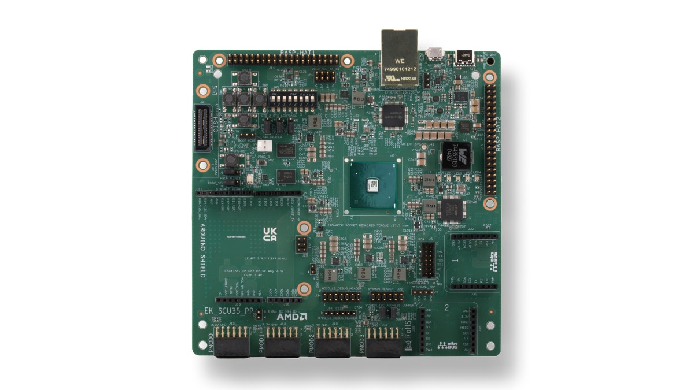
Suggested pace
First 15–20 minutes: Build the platform → first AMD example → vendor library overview.
Then: PMC / PLM → PDI → security building blocks → signed boot.
Optional depth: register maps, full UART logs, timing methodology and performance comparisons.
Opening narration · about one minute
Today we will start with examples supplied by AMD and use them to ask the security hardware to do something observable. Our first task is preparing the hardware handoff and the Vitis platform. Then we can build a hash example and check its answer.
We begin with the existing IP Integrator design, export its hardware description, and generate the matching standalone BSP. After that, we will move into configuration and signed boot.
The page contains recorded results. We can also run the separate notebook on hardware, but a browser button here does not control the FPGA. We keep permanent fuse and flash programming outside this loaner demonstration.
My notes for this chapter
Shared IPI and platform
One IPI block design → one XSA → a shared Vitis platform for the AMD runtime examples.
<build_dir>/ipi/sec.xpr, block design sys, and its hw.xsa throughout the vendor runtime tutorials. Explain the hardware once, create the Vitis platform once, then change application code or enabled libraries as needed.1 · Inspect the shared IPI design
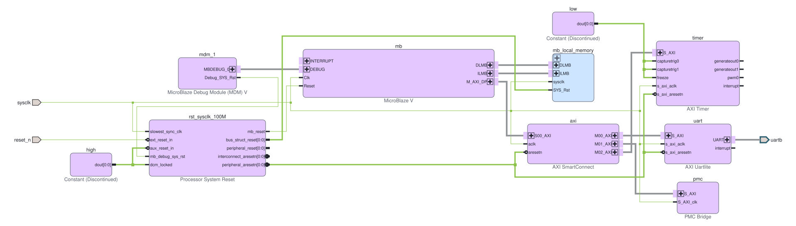
| Block in our design | Vendor IP / role | What the audience should notice |
|---|---|---|
mb | MicroBlaze V processor | Runs the PL application, not the dedicated PMC firmware. |
mb_local_memory | Local memory controllers and block RAM | Holds application instructions and data. |
axi | AXI SmartConnect | Routes mb/M_AXI_DP → axi/S00_AXI to the peripherals. |
pmc | PMC Bridge | The application’s access path to the hardened security functions. |
uart | AXI UARTLite | Carries the demonstration results to the host. |
timer | AMD AXI Timer 2.0 | Replaces custom cycles_0 plus AXI GPIO in this revision. Two channels form a 64-bit timer. |
mb/M_AXI_DP → axi/S00_AXI → pmc/S_AXI reaches the PMC services through the bridge. Other branches provide UART results and AXI Timer measurements. The PL MicroBlaze V is distinct from the dedicated PMC processor.
2 · Export the XSA hardware handoff
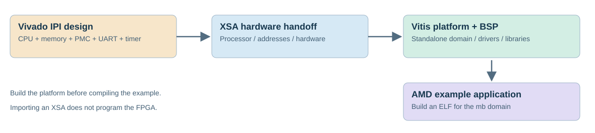
| Artifact | What it provides | Our file |
|---|---|---|
| Vivado project / BD | MicroBlaze V, local BRAM, PMC Bridge, UARTLite and AXI Timer | s35tmr/tmr.xpr / sys |
| XSA | Hardware definition consumed by Vitis | sec35/timer/hw.xsa |
| Platform / BSP | Standalone mb domain, generated headers, drivers and libraries | plat.xpfm |
| Application ELF | The next lesson: executable code built against that platform | Separate from the stock PMC plm.elf; building the platform does not build or run the application. |
Use the delivered <build_dir>/hw.xsa for this lesson. If you change the hardware, export a new XSA and update the platform. Selecting another security library does not by itself require another block design.
Optional: reproduce the XSA export in Vivado Tcl
# From the scu35 directory; creates the shared IPI/XSA python lab.py build --phase hardware
This writes a new handoff file, preserving the delivered hw.xsa. If using that new export, select hw.xsa as the Vitis input and update the build script’s XSA path accordingly. The recorded platform build below uses the delivered hw.xsa.
3 · Create the shared Vitis platform
| Vitis Unified 2026.1 step | Selection for this SCU35 design |
|---|---|
| Open a workspace | Use a short new directory. The recorded build uses <build_dir>/vsw. |
| File → New Component → Platform | Name the component plat35. |
| Select the hardware design | Browse to <build_dir>/hw.xsa. |
| Choose processor and operating system | Processor mb — MicroBlaze V; OS standalone; domain mb. |
| Create the platform | Check that the component uses this XSA and the mb processor. A different processor or old XSA means the wrong platform. |
AMD procedure: Create a platform component from XSA.
4 · Configure and build the BSP
Open the platform’s vitis-comp.json, expand the mb domain and open Board Support Package. Enable xilsecure for the first SHA lesson. Our preparation script also builds xilpuf and xilnvm for later source walkthroughs; compiling a library executes none of its examples.
| Check before continuing | Expected result |
|---|---|
| Processor / domain | MicroBlaze V instance mb, standalone domain mb |
| Timer driver | tmrctr / AXI Timer; no old AXI GPIO timer mapping |
| Random peripheral | PMCL_TRNG mapped to XTrngpsx |
| BSP output | Generated xparameters.h, driver configuration and compiled libraries |
| Platform output | <build_dir>/vsw/plat/export/plat/plat.xpfm |
AMD reference: BSP settings, libraries and driver assignments.
{
"overall": "PASS",
"tool": "Vitis 2026.1",
"workspace": "C:\\aiup\\v35plat",
"platform": "C:\\aiup\\v35plat\\plat35\\export\\plat35\\plat35.xpfm",
"processor": "mb",
"domain": "mb",
"os": "standalone",
"scope": "Platform/BSP build only; no example execution and no hardware programming"
}Optional: repeat using the supplied Vitis Python build script
python lab.py build --phase platform
The script refuses to overwrite an existing plat35 component. Choose another short WORKSPACE path in the script for a new demonstration. To inspect this recorded build, open <build_dir>/vsw in Vitis instead. This is the Vitis Python environment; the notebook’s ordinary Python kernel is a separate tool.
client.set_workspace(str(WORKSPACE))
platform=client.create_platform_component(name='plat35',hw_design=str(XSA))
domain=platform.add_domain(name='mb',cpu='mb',os='standalone')
for lib in ('xilsecure','xilpuf','xilnvm'):domain.set_lib(lib)
platform.build()5 · Build examples against the same platform
- Create an application component using the built
plat.xpfmand the standalonembdomain. - Select the Spartan SHA example when available in the example view, or create an empty application and import xilsecure_spartanup_sha_server_example.c.
- Build its ELF against the generated BSP. Review the application linker and shared-buffer placement before downloading it.
- Continue to the AMD tutorial path for the known input, captured hardware digest and Python comparison.
Ready to continue?
Ask: “Which file moves the hardware description into Vitis, and which processor will our example run on?” Continue when the audience identifies XSA and the PL MicroBlaze V named mb.
Platform-first narration · 5–7 minutes
Before we ask the security hardware to hash anything, we need a software platform that matches our FPGA design. In Vivado, we already have a MicroBlaze V, local memory and a bridge to the PMC functions.
Vivado exports an XSA describing that hardware. Vitis reads the XSA so it can generate the correct processor support, memory addresses and device drivers. Importing that file does not program the board.
We select the processor named mb and a standalone domain, then enable the software libraries and build the platform. The useful outputs are the platform file and its BSP: headers, driver configuration and compiled libraries.
Our fresh build recognizes AXI Timer and the XTrngpsx driver for PMCL_TRNG. That check helps us avoid accidentally using the older platform with its GPIO counter.
Now we can create an application using this platform and import the AMD SHA example. Building the platform, building the application and proving it on hardware are three separate steps. The next chapter shows the first observable result.
What changes between demonstrations?
| Demonstration | Hardware reuse | What changes |
|---|---|---|
| SHA3 / SHAKE, AES, LMS/HSS verification, RNG and PUF runtime tutorials | Reuse the shared sys BD and hw.xsa | Application source, library choices and reviewed buffer/linker placement. XilNvm remains read-only source review, not a new hardware run. |
| Signed / encrypted / rolling-key configuration images | The same PL configuration can be packaged into different PDIs | Bootgen BIF attributes, signatures, certificates and encryption/key material. A different security mode does not inherently require a new IPI design. |
| Retained secure-boot captures | Recorded with the previous PL counter revision | These older PDIs have not been rebuilt and retested against the current AXI Timer netlist. Their evidence remains labeled historical. |
| Native PMC performance benchmark | Separate experimental firmware / retained PL fixture | An advanced benchmark path; it is not another prerequisite platform for the vendor tutorials. |
Optional reference: timer registers, self-tests and historical IPI evidence
The IP supplies two 32-bit channels. Firmware enables cascade mode to form a 64-bit up-counter. Both channels share the existing 100 MHz clock; freeze and capture inputs are held inactive, and interrupts are disabled.
| Timer register | Address | Role |
|---|---|---|
| TCSR0 | 0x40000000 | Control: cascade, load, enable and auto-reload |
| TLR0 / TLR1 | 0x40000004 / 0x40000014 | Lower / upper load value |
| TCR0 / TCR1 | 0x40000008 / 0x40000018 | Lower / upper running count |
| TCSR1 | 0x40000010 | Second channel control used during load initialization |
static u64 timer_ticks64(void) {
u32 hi,lo,again;
do {
hi=Xil_In32(TMR_BASE+0x18U);
lo=Xil_In32(TMR_BASE+0x08U);
again=Xil_In32(TMR_BASE+0x18U);
} while(hi!=again);
return ((u64)hi<<32)|lo;
}sec35/timer. It does not replace native PMC mcycle timing, the Python host clock, or the counter inside the retained older signed-boot PDIs. See the AMD library examples and Performance chapters for the timing-source table.TMR_TEST,carry,1,4117 TMR_TEST,monotonic,1000,37,51 TMR_META,axi_timer,64,100000000,40000000 CMP_META,2,100000000,20,10,7d1bf77bc454dd1f,34 CMP_DONE,0
Original IPI revision used by the retained signed/encrypted boot captures
mb is a separate MicroBlaze V implemented in PL. Its application starts after configuration; it does not establish the initial boot trust decision.1 · Open the real IPI block design
# Open <build_dir>/ipi/sec.xpr in Vivado; inspect the sys block design.
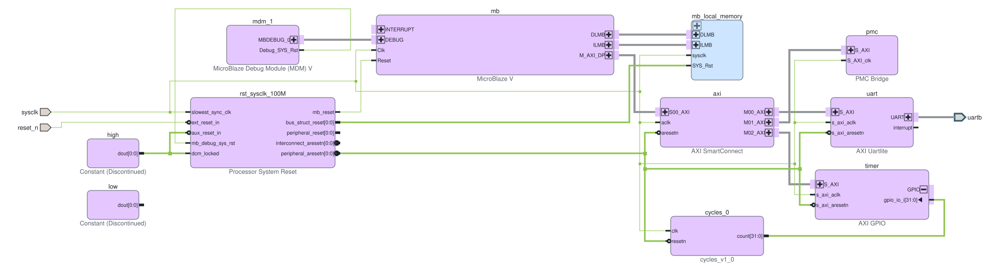

| IPI interface net | Actual endpoints |
|---|---|
| mb_M_AXI_DP | mb/M_AXI_DP → axi/S00_AXI |
| axi_M00_AXI | axi/M00_AXI → uart/S_AXI |
| axi_M01_AXI | axi/M01_AXI → pmc/S_AXI |
| axi_M02_AXI | axi/M02_AXI → timer/S_AXI |
cycles_0/count through timer/gpio_io_i. The custom 100 MHz counter supplies the runtime timing samples; this design does not instantiate an AXI Timer IP.| Artifact | Role |
|---|---|
s35cmp/cmp.xpr / sys.bd | Vivado 2026.1; xcsu35p-sbvb625-2-e; PL hardware design |
sec35/compare/bench.elf | MicroBlaze V application initialized into PL BRAM |
plm.elf | Stock AMD firmware packaged for the dedicated PMC; separate from bench.elf |
design.rcdo | PL configuration stream from the implemented design, including application initialization |
signed.pdi / combo.pdi | Bootgen packages the same real PL payload with the selected image protections |
Address Editor: selected regions from this exact BD
| Segment | Base address | Size |
|---|---|---|
| SEG_dlmb_bram_if_cntlr_Mem | 0x00000000 | 128K |
| SEG_pmc_pmcl_dma_0 | 0x040E0000 | 64K |
| SEG_pmc_pmcl_sha3_0 | 0x04100000 | 64K |
| SEG_pmc_pmcl_aes_0 | 0x040F0000 | 64K |
| SEG_pmc_pmcl_puf_0 | 0x04080000 | 64K |
| SEG_pmc_pmcl_trng_0 | 0x04120000 | 64K |
These mappings describe connectivity; they do not authorize arbitrary writes to configuration or key-storage registers. The runtime demo uses its matched drivers and owned buffers.
2 · Present the design in Vivado
- Open
sysand locatemb. Follow ILMB and DLMB to local memory. - Follow
mb/M_AXI_DPintoaxi/S00_AXI. Identify the separate UART, PMC bridge and timer branches. - Highlight
pmc/S_AXI. The bridge exposes the hardened PMC services; the SHA and AES engines are not soft IP blocks instantiated in this PL design. - Open Address Editor and compare the mapped regions with the source table above.
- Point out
mdm_1, reset logic andcycles_0. The UART carries captured application results; runtime timing does not include JTAG upload/readout.
IPI chapter narration · 4–6 minutes
This is an actual export from Vivado of the block design used by our functional crypto demo. Start at mb: that is a MicroBlaze V implemented in programmable logic. Follow its instruction and data memory buses to the local BRAM, where the application is initialized.
The AXI data port goes to an interconnect with three peripheral branches. One reaches the UART, another reaches the timer, and the PMC branch reaches the hardened security system. We do not have separate SHA or AES soft cores instantiated in this design.
There are two processors to keep track of. The MicroBlaze V here runs bench.elf after configuration. The dedicated PMC runs the configuration firmware packaged as plm.elf. The bridge connects our running PL software to PMC services; it does not make the PL processor the initial root of trust.
In Address Editor, we can see the regions the driver uses for SHA, AES, DMA, PUF and other functions. A mapped register window is connectivity, not proof that every operation is safe or supported. Our examples use the matching drivers and their allocated buffers.
For the audience, the important path is application, AXI interconnect, PMC bridge, then hardened cryptographic functions. The next chapter moves earlier in time to explain how this PL application is authenticated and configured before it runs.
My notes for this chapter
Address map and PMC blocks
A guided summary of every segment in the Address Editor screenshot, with its role in the shared platform and security demonstrations.
microblaze_riscv_0/Data. Our shared design calls that processor mb and the bridge pmc. The bridge exposes windows into existing hardened blocks; these rows do not instantiate another copy of each crypto engine.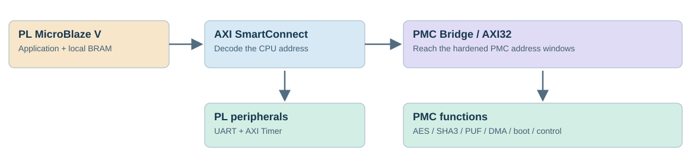
How to read the columns
| Column | Meaning |
|---|---|
| Name / Interface | Instance and target interface reached by an access from this processor. |
| Slave Segment | Named target register, memory or stream aperture. |
| Master Base Address | First CPU address assigned to that segment. |
| Range / Master High Address | Decode span and inclusive last address: high = base + range − 1. A 64 KiB window does not imply 64 KiB of usable registers or payload RAM. |
PL processor, debug and application memory
| Screenshot entry | Screenshot base → high | Purpose | Shared timer design |
|---|---|---|---|
| mdm_1/S_AXI | 0x44A00000 → 0x44A0FFFF · 64 KiB | PL processor debug-module register window; separate from the dedicated PMC processor. | No equivalent mapped MDM segment in the delivered mb/Data snapshot. |
| microblaze_riscv_0_axi_intc/S_AXI | 0x41200000 → 0x4120FFFF · 64 KiB | PL AXI interrupt controller: routes enabled peripheral interrupts to the PL CPU. | No equivalent mapped AXI INTC segment in the delivered snapshot; benchmark timer is polled. |
| Local memory / dlmb_bram_if_cntlr/SLMB | 0x00000000 → 0x0001FFFF · 128 KiB | PL MicroBlaze V application instructions/data, stack and heap according to the linker script. | Same 128 KiB address span; distinct from PMC firmware RAM. |
All 18 PMC Bridge windows in your screenshot
Base, high address and range below are also checked against hw/sys.bd. Names preserve the screenshot spelling, including PMC_AES.
| Bridge interface / block | Base / high / range | What it does | Presentation and demo connection |
|---|---|---|---|
CCU_APBConfiguration control registers CCU_APB registers · UG1679 | 0x0413000064 KiB | Control/status interface for the configuration control unit. | Explain PL configuration; no arbitrary register writes. |
CCU_RD_STREAMConfiguration read stream Related CCU_APB control registers Stream aperture; linked page documents the associated control block, not this data aperture. | 0x0406000064 KiB | Configuration readback data aperture. | Architecture walkthrough; no new readback qualification. |
CCU_WR_STREAMConfiguration write stream Related CCU_APB control registers Stream aperture; linked page documents the associated control block, not this data aperture. | 0x0407000064 KiB | Configuration write-data aperture. | Relate to PL configuration carried by the PDI. |
PLM_CONFIGPMC firmware/configuration memory window Register-guide access · UG1680 / DSL No dedicated public UG1679 subsection found. This link identifies the security register guide and its Design Security Lounge access requirement; it is not a register subsection. | 0x0402000064 KiB | Memory region used by the PMC firmware; not a separate PLM processor. | Explain plm.elf placement and reviewed shared buffers. Mapped RAM is not automatically free. |
PMC_AESAES engine AES register definitions · AMD source Public driver definitions; complete security-register documentation is UG1680 in the Design Security Lounge. | 0x040F000064 KiB | Hardened AES-GCM encryption/decryption block. | Known plaintext/ciphertext/tag tests, bad-tag rejection and PUF-key data protection. |
PMCL_DMAPMC DMA Register-guide access · UG1680 / DSL No dedicated public UG1679 subsection found. This link identifies the security register guide and its Design Security Lounge access requirement; it is not a register subsection. | 0x040E000064 KiB | Moves data for the PMC stream and crypto paths under software control. | Explain resident-buffer throughput; separate transfer, setup and crypto cost. |
PMCL_EFUSEPersistent security storage control EFUSE registers · UG1679 | 0x0416000064 KiB | Access to eFUSE control/status and documented read interfaces. | Read-only source review. No eFUSE programming; secret AES keys are not a readable dump. |
PMCL_GLOBALGlobal PMC control/status GLOBAL registers · UG1679 | 0x040A0000128 KiB | Global PMC controls and status, including clock/reset-related settings. | Explain system context; not a timed cryptographic method. |
PMCL_OSPIBoot-flash controller OSPI_QSPI registers · UG1679 | 0x0409000064 KiB | Controller interface for external serial boot flash. | Explain boot-source options. No flash writes; native OSPI operation is not established by our captures. |
PMCL_PUFDevice-specific key derivation PUF register definitions · AMD source Public driver definitions; complete security-register documentation is UG1680 in the Design Security Lounge. | 0x0408000064 KiB | PUF registration/regeneration control with helper data. | RAM-only helper-data lifecycle and PUF-derived AES tests; no permanent enrollment. |
PMCL_SHA3SHA3 / SHAKE engine SHA3 register definitions · AMD source Public driver definitions; complete security-register documentation is UG1680 in the Design Security Lounge. | 0x0410000064 KiB | Hardened hash engine used for SHA3-256 and SHAKE-256 on SU35P. | Known-answer tests and hash-based LMS/HSS verification. No separate LMS/HSS hardware aperture. |
PMCL_SLAVE_BOOTSlave-boot control/status SBI registers · UG1679 | 0x0411000064 KiB | Registers associated with receiving a configuration image through slave boot interfaces. | Explain image ingress; not a claim every boot interface has been exercised. |
PMCL_TAPJTAG TAP control interface TAP registers · UG1679 | 0x040C0000128 KiB | PMC-side interface associated with the JTAG test/configuration access path. | Explain programming/debug context; this is distinct from the PL MDM debug block. |
PMCL_TRNGRandom-number generator TRNG register definitions · AMD source Public driver definitions; complete security-register documentation is UG1680 in the Design Security Lounge. | 0x0412000064 KiB | Hardened random-generation peripheral, exposed through the XTrngpsx driver. | HRNG/DRNG/PTRNG examples and smoke tests; not entropy certification. |
RV_IOMODULEPMC processor support I/O Register-guide access · UG1680 / DSL No dedicated public UG1679 subsection found. This link identifies the security register guide and its Design Security Lounge access requirement; it is not a register subsection. | 0x040400004 KiB | Support peripheral for the dedicated PMC RISC-V processor. | Firmware/control context; not the PL MicroBlaze V UART or the external AXI Timer. |
RV_RAM_DATA_ECC_CTRLPMC data-RAM error correction Register-guide access · UG1680 / DSL No dedicated public UG1679 subsection found. This link identifies the security register guide and its Design Security Lounge access requirement; it is not a register subsection. | 0x040420004 KiB | Control/status for error correction on PMC data RAM. | Reliability walkthrough only; ECC correction/injection is not demonstrated here. |
RV_RAM_INSTR_ECC_CTRLPMC instruction-RAM error correction Register-guide access · UG1680 / DSL No dedicated public UG1679 subsection found. This link identifies the security register guide and its Design Security Lounge access requirement; it is not a register subsection. | 0x040410004 KiB | Control/status for error correction on PMC instruction RAM. | Explain memory integrity. ECC here means error-correcting code, not elliptic-curve cryptography. |
SLAVE_BOOT_STREAMSlave-boot data stream Related SBI control registers Stream aperture; linked page documents the associated control block, not this data aperture. | 0x0405000064 KiB | Data aperture for incoming slave-boot image traffic. | Distinguish image bytes from PMCL_SLAVE_BOOT control registers. |
Two additional windows in our shared benchmark design
| Peripheral | Base → high | How we use it |
|---|---|---|
| AXI Timer | 0x40000000 → 0x4000FFFF · 64 KiB | 100 MHz, two cascaded 32-bit counters. Coherent 64-bit reads; current CMP elapsed fields use the low 32 bits. |
| AXI UARTLite | 0x40600000 → 0x4060FFFF · 64 KiB | Result telemetry. UART output and JTAG loading/readout are outside the timed operation interval. |
0x04120000; the screenshot’s PL interrupt controller is 0x41200000. CCU read stream is 0x04060000; our UART is 0x40600000. These are different addresses.What to say during the livestream
“The soft processor runs our demo application from BRAM. Its AXI address selects either a PL peripheral or the PMC Bridge. Through that bridge, the application uses the hardened hash, encryption, PUF and random-generation services. The dedicated PMC processor runs its own firmware. Boot authentication uses the same security architecture, but a successful application-level test and a successful authenticated boot are separate demonstrations.”
Audit this stage before building software
- In Vivado, open Address Editor under your PL CPU’s Data space. Match every PMC base/range against this table.
- Check your own debug, interrupt, UART and timer instances; their PL addresses may differ from the screenshot.
- Validate the BD, export your XSA, then compare generated BSP addresses with this same hardware revision.
- Use the AMD drivers for the selected demo. A visible window alone proves neither successful access nor permission to change its contents.
AMD references: PMC Bridge (UG1704), AXI32 runtime access, and Spartan UltraScale+ register reference (UG1679). Address assignments above come from the supplied screenshot and the local BD; demo status comes from the retained captures described in later chapters.
My notes for this chapter
AMD tutorial path
One simple experiment first: hash a known message and independently check the result.
| Step | What to show | What to say |
|---|---|---|
| 1 · Open the AMD source | Spartan SHA server example | This is the vendor starting point for the target family. Our combined application adapts it. |
| 2 · Identify the request | XSecure_ShaInitialize and XSecure_ShaDigest | Choose SHA3-256 or SHAKE-256; for this SHAKE test, request 32 output bytes. |
| 3 · Use a known input | 16 bytes: 01 02 03 … 10 in hexadecimal | The message is public and repeatable, so Python can independently calculate the same digest. |
| 4 · Show the result | Two exact captured digest lines below | Matching bytes demonstrate correctness for this test. They do not measure secure-boot enforcement or maximum speed. |
CMP_HASH,SHA3-256,16,8D9EF5E1443F0286E4FA45C5205ED2584CBC1B19ECDE4ADB2EF7E60EA6E780CA CMP_HASH,SHAKE-256,16,99AA50C37F60C16DB90EDB15DAD722CC13208E913ED11C11575B9A1823A908EF
import hashlib
message = bytes(range(1, 17))
print("SHA3-256:", hashlib.sha3_256(message).hexdigest())
print("SHAKE-256:", hashlib.shake_256(message).hexdigest(32))Continue through the vendor examples
| Next lesson | AMD starting point | Audience question |
|---|---|---|
| Random-number service | XTrngpsx HRNG example | Should two independent random outputs match? |
| PUF-derived key | Spartan PUF data encryption example | Can we clear a key source and then regenerate it without displaying the secret? |
| Image authentication | Spartan LMS/HSS verification example | Does a changed signature still verify? Runtime verification leads into the later signed-PDI demonstration. |
| eFUSE information — optional | XilNvm source review | Which fields are readable? This is a read-only source walkthrough, not execution of the write-capable stock program. |
Use our ready-to-run tutorial
Open scu35_timer.ipynb with Python 3.11 (SCU35 Compare). Start with its saved outputs and functional checks. Leave the optional hardware cell disabled during source review. The recorded firmware combines selected examples; it is not an unmodified vendor example application.
Audience checkpoint
Before continuing, ask: “What went into the hash operation, and what came out?” Continue when the audience can explain message → digest → independent comparison.
Then ask: “Would hashing alone prove who created the message?” Use that distinction to introduce signatures later.
Tutorial narration · 3–4 minutes
Let’s start at the AMD example. We are looking for two things: how the hash service is initialized and how the digest operation is called. We do not need every register to understand that request.
Our input here is sixteen known bytes. We show the hardware digest and independently compute the same answer with Python. That gives the audience a complete experiment with a clear pass condition.
Next we can change the kind of service. With random data, matching Python is no longer the pass condition. With a PUF, the key stays inside the device, so regeneration and successful use become the proof.
We will come back to signatures when we discuss boot. For now, remember that a hash checks a relationship between data and a digest; authentication needs a trusted signing key as well.
My notes for this chapter
AMD example libraries
Choose an example, identify its API, and explain what a successful test looks like.
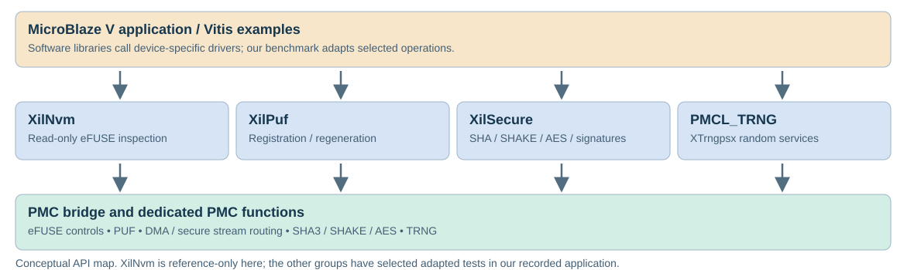
| Vendor example group | First thing to teach | Our available demonstration |
|---|---|---|
| XilSecure | Message → digest; then encryption and signatures | Exact SHA3/SHAKE and AES results; positive and negative signature checks. |
| PMCL_TRNG / XTrngpsx | Randomness has a different success criterion from hashing | HRNG, DRNG and PTRNG status and output smoke checks. |
| XilPuf | Use a device-derived key without displaying it | Temporary registration and five clear / regenerate / decrypt cycles. |
| XilNvm — read only | Inspect selected readable identity or policy fields | Source walkthrough only; stock main calls a fuse-write helper and must not be run as a read-only demo. |
PMCL_TRNG peripheral uses the XTrngpsx driver. Our working notebook combines adapted operations from these examples.Teach the result before the implementation
For each service, name the input, the output and the pass condition. Show one positive result, then one relevant failure or limitation. Open the full source and logs only when the audience needs the next level.
Library overview narration · 2–3 minutes
These examples give us several ways to talk to the same security subsystem. Start with XilSecure for a digest that we can compare exactly. Then use the random-number example to show why different services need different tests.
PUF-derived keys add another useful lesson: we can demonstrate a key doing its job without printing it. The read-only eFUSE walkthrough is optional because it explains provisioning state rather than a throughput result.
The shared IPI design and Vitis platform are already in place. We can now change examples without repeating the hardware introduction. The detailed source and logs remain below.
Optional deep dive: full source walkthrough, recorded logs and timing provenance
| Topic | Purpose | What we can show now |
|---|---|---|
| XilNvm — read only | Inspect selected readable eFUSE identity, public hashes and policy state | Source walkthrough. Do not execute the stock read/write main program. |
| XilPuf | Establish and reconstruct device-derived key material | Recorded registration; five clear / reject / regenerate / decrypt cycles. |
| XilSecure | Hashing, symmetric data protection and signature verification | Exact SHA3/SHAKE and AES-GCM results; valid and invalid LMS/HSS vectors. |
| PMCL_TRNG / XTrngpsx | Use the PMC random-number block | HRNG, DRNG and PTRNG initialization, self-tests and 20 generation calls per mode. |
1 · XilNvm — inspect eFUSE state without programming it
xilnvm_efuse_spartan_ultrascale_plus_example.c is a combined read/write example. Its main() calls XilNvm_EfuseWriteFuses() before CRC checks and readout. It must not be presented as a read-only executable.
| Read API starting point | What to explain |
|---|---|
XNvm_EfuseReadDna | Device identity; an identifier is not a secret encryption key. |
XNvm_EfuseReadPpkHash | Readable public-key hash fields, subject to the device policy and supported API. |
XNvm_EfuseReadUserFuse | User fuse readout where supported and permitted. |
| Read helpers for revocation / control / IV state | Decode the selected documented fields; read accessibility is not programming authorization. |
Read-only presentation flow
Review the matching header and read APIs → use an explicit allowlist of readable fields → report status with each result → interpret identity/public policy data. Omit the write helper and all programming, lock, revocation and policy-update paths.
Current evidence: no new XilNvm read-only application has been built or run in this update. The accepted public-zero diagnostic boot image does not prove that we read an AES key or dumped every fuse. We do not display secret-key contents.
2 · XilPuf — registration, helper data and regeneration
Start with xilpuf_spartan_ultrascale_plus_example.c and xilpuf_spartan_ultrascale_plus_enc_dec_data_example.c. The configuration header exposes options for registration/regeneration, helper handling and optional persistent programming. Inspect those choices before adapting the code.
- Register temporarily and retain helper data in owned RAM.
- Encrypt a known test message using the PUF key source.
- Clear that key source; verify the driver rejects its use before decryption.
- Regenerate from the same helper data, decrypt the saved ciphertext and compare plaintext.
- Repeat five times, then clear the key and temporary work buffer.
CMP_FEATURE,PUF-REGISTER,1,33715,0 CMP_FEATURE,PUF-AES-ENC,1,4070,0 CMP_PUF_CLEARED,0,70 CMP_PUF_REGEN,0,56821,0 CMP_FEATURE,PUF-KEY-CLEAR,5,1470,0 CMP_FEATURE,PUF-REGENERATE,5,284105,0 CMP_FEATURE,PUF-AES-DEC,5,17360,0 CMP_PUF_ROUNDTRIP,5,0
3 · XilSecure — hashes, authenticated data and post-quantum signatures
| Example / operation | Presenter demonstration | Pass and failure evidence |
|---|---|---|
| Spartan SHA server example | SHA3-256 and SHAKE-256 on SU35P; test 16, 64, 256, 1024 and 2048-byte messages | 10 exact digests match Python; SHAKE requests 32 output bytes. |
| Matched Spartan AES APIs, demonstrated through Spartan PUF/AES data example and our USER0 adaptation | AES-256-GCM encrypt/decrypt with a public diagnostic USER0 key; separately exercise the PUF source | Five ciphertext/tag vectors match Python; changed tags are rejected. Nonce uniqueness matters. |
| Spartan LMS/HSS server example | Runtime LMS-SHAKE256 and HSS-SHAKE256 verification: valid, changed signature, changed message and wrong key | Both positive and negative cases have expected status. Runtime vectors are distinct from HSS-signed PDI boot. |
CMP_ROW,LMS-SHAKE256,valid,56,10,0,4570,12597947,0,1259779,1259810,0 CMP_ROW,LMS-SHAKE256,bad_signature,56,10,0,4570,11763269,0,1176319,1176336,171 CMP_ROW,LMS-SHAKE256,bad_message,56,10,0,4570,12418531,0,1241841,1241859,171 CMP_ROW,LMS-SHAKE256,bad_key,56,10,0,4570,12597853,0,1259772,1259801,171 CMP_ROW,HSS-SHAKE256,valid,56,10,0,4570,11839031,0,1183889,1183915,0 CMP_ROW,HSS-SHAKE256,bad_signature,56,10,0,4570,12642577,0,1264246,1264268,171 CMP_ROW,HSS-SHAKE256,bad_message,56,10,0,4570,12314996,0,1231484,1231514,171 CMP_ROW,HSS-SHAKE256,bad_key,56,10,0,4570,11839023,0,1183896,1183906,171
Hashing and AES use hardened functions with software/DMA control. HSS/LMS verification also contains software work. Boot authentication on SU35P uses HSS-SHAKE256; demonstrating a standalone LMS verifier does not add an LMS-only boot option.
4 · PMCL_TRNG — XTrngpsx examples
PMCL_TRNG is the PMC peripheral name. The generated BSP maps it to XTrngpsx at 0x04120000; the driver package is trngpsx. It is not a separate library named pmcl_trng.
| Mode / AMD example | Purpose in the walkthrough | How to assess it |
|---|---|---|
| HRNG · xtrngpsx_hrng_example.c | Hardware-backed random service with instantiation, self-tests and generation | Check status and requested output size. Two good random outputs are not expected to match. |
| DRNG · xtrngpsx_drng_example.c | Deterministic generator exercised with the demo’s public diagnostic seed | A public test seed is not production entropy or a secret. Do not compare this service with physical entropy collection as though they were identical. |
| PTRNG · xtrngpsx_ptrng_example.c | Physical-TRNG mode through the supported API | Our length/nonzero/change checks are smoke tests, not an entropy or randomness certification. |
API sequence: LookupConfig → CfgInitialize → PreOperationalSelfTests → Instantiate → Generate → Uninstantiate. The vendor examples also demonstrate reseed behavior; our current combined benchmark does not separately time a reseed operation.
CMP_FEATURE,TRNG-HRNG-SETUP,1,3628912,0 CMP_ROW,TRNG-HRNG,generate,32,20,0,0,3247031,0,676,3234187,0 CMP_FEATURE,TRNG-DRNG-SETUP,1,3678294,0 CMP_ROW,TRNG-DRNG,generate,32,20,0,0,13901,0,666,1247,0 CMP_FEATURE,TRNG-PTRNG-SETUP,1,3625949,0 CMP_ROW,TRNG-PTRNG,generate,32,20,0,0,17229270,0,860755,862269,0
5 · What uses AXI Timer?
| Dataset / execution path | Timing instrument | Status and interpretation |
|---|---|---|
sec35/timer — current PL benchmark | AMD AXI Timer, nominal 100 MHz; coherent 64-bit reads | 31 timing rows plus PUF lifecycle timings. Firmware 7d1bf77bc454dd1f. CMP v2 elapsed fields remain 32-bit. |
sec35/compare — original PL benchmark | Custom cycles_0 counter read through AXI GPIO, nominal 100 MHz | Retained historical measurements; not relabeled as AXI Timer results. |
| Signed / encrypted boot-image application captures | Original custom-counter PL application | These images still contain the original PL design. Their runtime rows are not full boot latency measurements. |
sec35/fast — native PMC bulk crypto and LMS/HSS | PMC mcycle; frequency estimated against the nominal 100 MHz PL reference | Existing native-PMC image. The 0.984 / 0.927 ms LMS/HSS results use this counter, not AXI Timer. |
| Python references | Host time.perf_counter_ns() | A separate host clock, independent of either FPGA counter. |
| XilNvm read-only walkthrough | No measured timing row | Not included in the current 31-row benchmark; no new eFUSE readout claimed. |
TMR_TEST,carry,1,4117 TMR_TEST,monotonic,1000,37,51 TMR_META,axi_timer,64,100000000,40000000 CMP_META,2,100000000,20,10,7d1bf77bc454dd1f,34 CMP_DONE,0
Example links were fetched successfully and pinned to AMD release xlnx_rel_v2026.1, commit b5cd5477bb44b9fadd98be10ea2f12705b9287f3. A successful source-link check is not a hardware result.
Example-library narration · optional 6–8 minute walkthrough
These four names describe software entry points into different security functions. They are not four new accelerators that we instantiate in the block design. Our MicroBlaze V reaches the hardened functions through the PMC bridge.
Start with XilNvm. The vendor program is a read and write demonstration, and its main routine actually calls the write helper first. For this loaner, we discuss a dedicated read-only path for identity and readable public policy fields. We do not run the stock program, expose encryption keys, or claim that XilNvm is part of our current benchmark.
XilPuf changes the kind of proof we can show. We cannot ask desktop Python to reproduce this chip’s physical key. Instead, we register temporarily, encrypt, clear the key source, demonstrate rejection, regenerate using the same helper data, and recover the original plaintext. Our recorded application repeats that five times.
XilSecure gives us results that are easier to compare exactly. We match hash digests and public-key AES test ciphertext against Python, then deliberately break tags and signatures. For signatures, successful runtime verification and secure configuration are separate demonstrations with different inputs.
The random block appears as PMCL_TRNG in the platform. Its software driver is XTrngpsx. We show the three mode examples and their different purposes. The output of a good hardware random call should not equal the desktop output, and checking that bytes change is not enough to certify entropy.
Finally, identify the timing clock before reading a chart. The new PL application uses AXI Timer for all thirty-one rows. The native PMC tests use their own CPU cycle counter, Python uses its host performance clock, and the retained boot captures use the older PL counter. We keep those labels attached to the results.
My notes for this chapter
PMC and PLM.elf
Separate the dedicated controller, its firmware, and the application implemented in PL.
Select a block to show what it does and which demonstration exercises it.
| Component | Role in this presentation | Evidence boundary |
|---|---|---|
| PMC | Dedicated configuration and security subsystem | Hardware plus firmware; not just an AES accelerator |
| BootROM | Initial interpretation and authentication/decryption path | Immutable startup trust boundary |
| AMD PLM ELF | Supplied firmware packaged with the boot image | Used in the protected PDI demonstrations |
| PL application ELF | MicroBlaze-V application initialized into BRAM | Different executable from plm.elf |
| Native benchmark loader | Separate experimental PMC firmware | Not the production secure loader |
riscv64-unknown-elf-readelf -h -l /path/to/build/plm.elf
ÿþE�L�F� �H�e�a�d�e�r�:� � � � �M�a�g�i�c�:� � � �7�f� �4�5� �4�c� �4�6� �0�1� �0�1� �0�1� �0�0� �0�0� �0�0� �0�0� �0�0� �0�0� �0�0� �0�0� �0�0� � � � � �C�l�a�s�s�:� � � � � � � � � � � � � � � � � � � � � � � � � � � � � �E�L�F�3�2� � � � �D�a�t�a�:� � � � � � � � � � � � � � � � � � � � � � � � � � � � � � �2�'�s� �c�o�m�p�l�e�m�e�n�t�,� �l�i�t�t�l�e� �e�n�d�i�a�n� � � � �V�e�r�s�i�o�n�:� � � � � � � � � � � � � � � � � � � � � � � � � � � �1� �(�c�u�r�r�e�n�t�)� � � � �O�S�/�A�B�I�:� � � � � � � � � � � � � � � � � � � � � � � � � � � � �U�N�I�X� �-� �S�y�s�t�e�m� �V� � � � �A�B�I� �V�e�r�s�i�o�n�:� � � � � � � � � � � � � � � � � � � � � � � �0� � � � �T�y�p�e�:� � � � � � � � � � � � � � � � � � � � � � � � � � � � � � �E�X�E�C� �(�E�x�e�c�u�t�a�b�l�e� �f�i�l�e�)� � � � �M�a�c�h�i�n�e�:� � � � � � � � � � � � � � � � � � � � � � � � � � � �R�I�S�C�-�V� � � � �V�e�r�s�i�o�n�:� � � � � � � � � � � � � � � � � � � � � � � � � � � �0�x�1� � � � �E�n�t�r�y� �p�o�i�n�t� �a�d�d�r�e�s�s�:� � � � � � � � � � � � � � � �0�x�4�0�2�0�0�0�0� � � � �S�t�a�r�t� �o�f� �p�r�o�g�r�a�m� �h�e�a�d�e�r�s�:� � � � � � � � � � �5�2� �(�b�y�t�e�s� �i�n�t�o� �f�i�l�e�)� � � � �S�t�a�r�t� �o�f� �s�e�c�t�i�o�n� �h�e�a�d�e�r�s�:� � � � � � � � � � �2�4�7�7�8�4�8� �(�b�y�t�e�s� �i�n�t�o� �f�i�l�e�)� � � � �F�l�a�g�s�:� � � � � � � � � � � � � � � � � � � � � � � � � � � � � �0�x�1�,� �R�V�C�,� �s�o�f�t�-�f�l�o�a�t� �A�B�I� � � � �S�i�z�e� �o�f� �t�h�i�s� �h�e�a�d�e�r�:� � � � � � � � � � � � � � � �5�2� �(�b�y�t�e�s�)� � � � �S�i�z�e� �o�f� �p�r�o�g�r�a�m� �h�e�a�d�e�r�s�:� � � � � � � � � � � �3�2� �(�b�y�t�e�s�)� � � � �N�u�m�b�e�r� �o�f� �p�r�o�g�r�a�m� �h�e�a�d�e�r�s�:� � � � � � � � � �3� � � � �S�i�z�e� �o�f� �s�e�c�t�i�o�n� �h�e�a�d�e�r�s�:� � � � � � � � � � � �4�0� �(�b�y�t�e�s�)� � � � �N�u�m�b�e�r� �o�f� �s�e�c�t�i�o�n� �h�e�a�d�e�r�s�:� � � � � � � � � �2�6� � � � �S�e�c�t�i�o�n� �h�e�a�d�e�r� �s�t�r�i�n�g� �t�a�b�l�e� �i�n�d�e�x�:� �2�5� � � � �P�r�o�g�r�a�m� �H�e�a�d�e�r�s�:� � � � �T�y�p�e� � � � � � � � � � � �O�f�f�s�e�t� � � �V�i�r�t�A�d�d�r� � � �P�h�y�s�A�d�d�r� � � �F�i�l�e�S�i�z� �M�e�m�S�i�z� � �F�l�g� �A�l�i�g�n� � � � �R�I�S�C�V�_�A�T�T�R�I�B�U�T� �0�x�0�6�c�6�2�3� �0�x�0�0�0�0�0�0�0�0� �0�x�0�0�0�0�0�0�0�0� �0�x�0�0�0�6�0� �0�x�0�0�0�0�0� �R� � � �0�x�1� � � � �L�O�A�D� � � � � � � � � � � �0�x�0�0�1�0�0�0� �0�x�0�4�0�2�0�0�0�0� �0�x�0�4�0�2�0�0�0�0� �0�x�0�6�5�c�0� �0�x�0�6�b�f�0� �R�W�E� �0�x�1�0�0�0� � � � �L�O�A�D� � � � � � � � � � � �0�x�0�0�0�2�0�0� �0�x�0�4�0�2�a�2�0�0� �0�x�0�4�0�2�a�2�0�0� �0�x�0�0�0�0�0� �0�x�0�0�c�0�0� �R�W� � �0�x�1�0�0�0� � � � � �S�e�c�t�i�o�n� �t�o� �S�e�g�m�e�n�t� �m�a�p�p�i�n�g�:� � � � �S�e�g�m�e�n�t� �S�e�c�t�i�o�n�s�.�.�.� � � � � �0�0� � � � � �.�r�i�s�c�v�.�a�t�t�r�i�b�u�t�e�s� � � � � � �0�1� � � � � �.�t�e�x�t�.�i�n�i�t� �.�t�e�x�t� �.�r�o�d�a�t�a� �.�d�a�t�a� �.�s�d�a�t�a� �.�b�s�s� �.�s�b�s�s� � � � � � �0�2� � � � � �.�s�t�a�c�k� � � �
Speaker script · 02:00–07:00 · Introduce the PMC BootROM and PLM elf
Operator: Point separately to BootROM, PLM, crypto engines and PL. Show the two distinct ELF roles: build/plm.elf and build/bench.elf. Do not present PMC as a Versal-identical subsystem.
The programmable logic is where our FPGA application lives: interfaces, pipelines, accelerators, memories, and any soft processors we choose to implement. The PMC is the dedicated controller involved in bringing that application into the device.
There is hardware here, and there is firmware. The PMC includes configuration and cryptographic hardware. Its BootROM is the initial firmware involved in interpreting and checking the configuration image. PLM is another piece of firmware in that startup process. The important point is that the PMC is not just an AES block, and the whole process is not just a software program running on my PC.
PLM stands for Platform Loader and Manager. In this Spartan flow, the tools include the supplied AMD PLM ELF with the configuration image. ELF is an executable-file format. It tells the tools about program segments and where they belong in memory.
The file named plm.elf is not the bitstream and it is not our application running in the programmable logic. In this demonstration we have both: AMD’s PLM for configuration, and a separate MicroBlaze-V application that is initialized into PL block RAM.
The startup path begins with the PMC’s BootROM. When authentication or encryption is selected, those checks participate before the protected firmware and configuration are used. This is why verification inside the configuration path matters: the device can stop an image before the application it contains gets to run.
For these boot demonstrations we are using the stock AMD PLM. Our custom native-PMC benchmark is a separate laboratory image. Its measured performance is useful, but it is not a replacement for the secure configuration flow we are demonstrating here.
My notes for this chapter
PDI versus bitfile
Use the actual byte breakdown to explain what is delivered and why the ELF file size is misleading.

| Component | Bytes | Share |
|---|---|---|
| PLM firmware payload | 26,048 | 1.916% |
| FPGA configuration stream | 1,326,152 | 97.523% |
| CDO commands / framing | 1,384 | 0.102% |
| Partition SHA3 chain bytes | 5,280 | 0.388% |
| Boot headers / root hashes / padding | 976 | 0.072% |
ELF container versus loaded bytes
Original PLM ELF container, including metadata
↓
File-backed load bytes packaged into this PDI
PDI is a configuration package
Boot header → integrity / authentication structures → PLM → PL configuration data.
The RCDO input carries commands and the PL configuration stream. A PDI is not created by renaming a .bit file, and its byte size is not FPGA resource utilization.
bootgen -arch spartanup -read /path/to/build/demo.pdi
Speaker script · 07:00–12:00 · Explain PDI versus a traditional bitfile
Operator: Show the original 1,359,840-byte image and its PLM/PL split. Run or display AMD Bootgen -read output. Do not use the runtime diagnostic utility as though it were the offline partition decoder.
If you have used older FPGA flows, you probably recognize a dot-bit file. With this Spartan UltraScale+ flow, the delivery format is a PDI: a Programmable Device Image.
Think of the PDI as a package for configuration. It contains a boot header, the loadable PLM firmware, programmable-logic configuration data, and integrity information. Secure variants add structures such as keys, signatures and encryption overhead.
The RCDO is the configuration-data input used in this flow. It ultimately carries configuration commands and the PL configuration stream. Changing the file extension from bit to PDI would not create this structure.
Here is the actual image from this project. The normal PDI is 1,359,840 bytes. The loadable PLM payload is 26,048 bytes, about 1.9 percent. The FPGA configuration stream is 1,326,152 bytes, about 97.5 percent. The rest is commands, headers, hashes and packaging overhead.
Notice that the original PLM ELF file is about 2.48 megabytes, but its packaged loadable payload is only about 26 kilobytes. The complete ELF container includes information that is not copied wholesale into the PDI. We compared the loadable ELF segments with the bytes extracted from the image.
That breakdown is useful for understanding boot cost and security overhead. The file size is not a measurement of logic utilization, and these byte counts belong to this particular design.
Our next step is to package the same real design with different protections. Keeping the payload the same lets us attribute the differences to security packaging instead of accidentally comparing different FPGA applications.
My notes for this chapter
Security building blocks
Keep confidentiality, integrity, authentication, key storage and trust policy distinct.
| Mechanism | What it establishes | What it does not establish alone |
|---|---|---|
| SHA3-256 / SHAKE-256 | A digest of the chosen bytes and parameters | Who supplied those bytes |
| HSS-SHAKE256 signature | Verification under a particular public key | That the public key belongs to the owner |
| AES-256-GCM | Encryption plus authentication under a symmetric key | Secrecy when the key is public |
| Rolling keys | Different keys across protected payload blocks | Measured resistance to power analysis |
| PUF-derived key | Use of device-derived key material | A complete deployed provisioning system |
| eFUSE policy / trust anchor | Permanent storage and enforcement when correctly provisioned | Something we programmed on this loaner |

| Boot key source | Bootgen spelling | Storage / wrapping | This presentation |
|---|---|---|---|
| eFUSE red | efuse_red_key | AES root directly in the selected eFUSE path | Public-zero diagnostic image accepted; no programming |
| eFUSE black | efuse_blk_key | PUF-wrapped root stored in eFUSE | Architecture only |
| eFUSE grey | efuse_gry_key | Family-key-wrapped root in eFUSE | Architecture only |
| Boot-header grey | bh_gry_key | Wrapped root in boot header; family-key prerequisite | Not tested |
| Boot-header black | bh_blk_key | PUF-wrapped root in boot header; helper data required | Listed by tool attributes; not tested |
| BBRAM | Unsupported on SU35P | Not a Spartan SU35P boot-key source | Do not use recipes from other families |
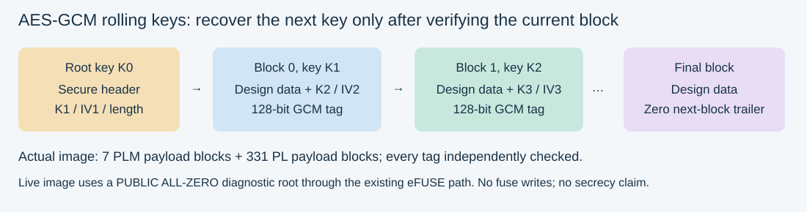
dpacm_enable. Enabling an option and checking functional results do not qualify side-channel resistance.AMD references: Spartan PDI settings · Rolling keys.
Speaker script · 12:00–16:00 · Encryption authentication and the role of hashes
Operator: Display the four jobs: hash → fingerprint; signature → verification under a public key; AES-GCM → confidentiality plus symmetric authentication; provisioning → trusted-key policy.
Encryption protects confidentiality: it makes the contents unreadable without the key. Authentication lets us check that the data is valid under the key or public key we have chosen to trust. Integrity checking detects a change. Those jobs fit together, but they are not interchangeable.
A hash is useful as a fingerprint of data. SHA3-256 produces a fixed-size digest. SHAKE-256 is an extendable-output function: the caller chooses the output length. In the tests we will show, both produce 32 output bytes.
A plain hash does not identify the sender. Someone who can replace both a file and its unprotected hash can make a new pair that agrees. A digital signature adds verification tied to a public key. The private key signs; the public key verifies.
For our signed PDI, a primary key authenticates a secondary key, and the secondary key authenticates the hash-block information that binds the image. We check the signing chain, the header hash and the payload chains rather than assuming that the presence of a certificate makes the file valid.
For encryption we use AES-256-GCM. GCM provides an authentication tag along with ciphertext. If the protected data or tag is changed, verification should fail. AES-GCM uses a symmetric key, so this is different from a public-key signature that can be verified without knowing the signing secret.
All of that still depends on key management. A valid signature under an arbitrary public key is not the same as a signature from the owner. Production trust needs a controlled way to decide which public key the device accepts.
Speaker script · 16:00–20:00 · Rolling keys and PUF derived keys
Operator: Highlight key fingerprints rather than key bytes. Keep boot rolling keys and the separate runtime PUF test visibly distinct.
Rolling keys change the encryption key as we move through blocks of the image. Each protected block carries information needed to reach the next key, IV and block length. The next material is itself inside the authenticated encrypted chain.
Our generated image has seven PLM payload blocks and 331 PL payload blocks. We do not infer that from the LED or the UART output. We follow the actual chain, check every GCM tag, recover the plaintext, and compare it with the original design.
Rolling keys are intended to reduce repeated use of one key and support defenses against side-channel analysis. Our demo proves that the packaged chain is processed correctly. It does not measure resistance to power analysis.
A PUF is a physically unclonable function. It uses device-specific physical behavior to produce key material. In key-wrapping applications, that device-derived material can protect an application key. The wrapped key and the underlying PUF key have different roles.
Registration produces helper data needed to reconstruct the key reliably. Helper data is not simply the secret AES key in another file, but it is part of the security design and needs controlled handling.
For the loaner demonstration, we keep helper data in temporary memory. We encrypt test data, clear the PUF key, show that the cleared key source is rejected, then regenerate the key and decrypt the original ciphertext. We repeat that five times.
That establishes same-session regeneration and use of the derived key without exporting it. It is not a power-cycle persistence test, a cross-device cloning test, or a demonstration of PUF-wrapped encrypted boot.
My notes for this chapter
PUF lifecycle
A step-by-step proof of key clearing, regeneration and successful use without exporting the secret.
1 · Register temporarily
Register the PUF and keep helper data in this image’s owned RAM. No helper data or secret key is displayed.
CMP_FEATURE,PUF-REGISTER,1,33717,0
Recorded excerpt, not a live hardware action.
| Observation | What it proves | Limit |
|---|---|---|
| PUF registration succeeds | Helper data and key source can be established in the session | No permanent helper-data storage |
| Cleared source returns 70 / 0x46 | Driver rejects the zeroized PUF key before decryption | Not a failed AES decrypt attempt |
| Regeneration then decryption succeeds | Regenerated source decrypts the saved ciphertext | Same helper data, same session |
| Five complete cycles | Repeated functional behavior in this test | No power-cycle, aging or environmental qualification |
CMP_FEATURE,PUF-REGISTER,1,33717,0 CMP_FEATURE,PUF-AES-ENC,1,4034,0 CMP_PUF_CLEARED,0,70 CMP_PUF_REGEN,0,56797,0 CMP_PUF_CLEARED,1,70 CMP_PUF_REGEN,1,56797,0 CMP_PUF_CLEARED,2,70 CMP_PUF_REGEN,2,56797,0 CMP_PUF_CLEARED,3,70 CMP_PUF_REGEN,3,56797,0 CMP_PUF_CLEARED,4,70 CMP_PUF_REGEN,4,56797,0 CMP_FEATURE,PUF-KEY-CLEAR,5,1375,0 CMP_FEATURE,PUF-REGENERATE,5,283985,0 CMP_FEATURE,PUF-AES-DEC,5,17250,0 CMP_PUF_ROUNDTRIP,5,0
python lab.py hardware --pdi /path/to/build/demo.pdi
Speaker script · 16:00–20:00 · Rolling keys and PUF derived keys
Operator: Highlight key fingerprints rather than key bytes. Keep boot rolling keys and the separate runtime PUF test visibly distinct.
Rolling keys change the encryption key as we move through blocks of the image. Each protected block carries information needed to reach the next key, IV and block length. The next material is itself inside the authenticated encrypted chain.
Our generated image has seven PLM payload blocks and 331 PL payload blocks. We do not infer that from the LED or the UART output. We follow the actual chain, check every GCM tag, recover the plaintext, and compare it with the original design.
Rolling keys are intended to reduce repeated use of one key and support defenses against side-channel analysis. Our demo proves that the packaged chain is processed correctly. It does not measure resistance to power analysis.
A PUF is a physically unclonable function. It uses device-specific physical behavior to produce key material. In key-wrapping applications, that device-derived material can protect an application key. The wrapped key and the underlying PUF key have different roles.
Registration produces helper data needed to reconstruct the key reliably. Helper data is not simply the secret AES key in another file, but it is part of the security design and needs controlled handling.
For the loaner demonstration, we keep helper data in temporary memory. We encrypt test data, clear the PUF key, show that the cleared key source is rejected, then regenerate the key and decrypt the original ciphertext. We repeat that five times.
That establishes same-session regeneration and use of the derived key without exporting it. It is not a power-cycle persistence test, a cross-device cloning test, or a demonstration of PUF-wrapped encrypted boot.
Speaker script · 42:00–47:00 · Demonstrate AES protected user data and PUF key regeneration
Operator: Point out the difference between expected zeroized-PUF-source rejection and successful regeneration. Show CMP_PUF_ROUNDTRIP,5,0. Do not print helper data or claim the driver’s early rejection was an attempted AES decrypt.
For general user data, our first AES-GCM test uses a public diagnostic key loaded into a volatile user-key slot. This is a different key source from the all-zero eFUSE-selected boot example.
We encrypt a known payload, compare the ciphertext and authentication tag with Python, and decrypt it back to the original message. Each encryption uses a fresh nonce within the test flow. A GCM nonce must not repeat with the same key.
We then change the tag. The operation must report failure. An application must treat failed authentication as a rejection and must not use unauthenticated output as valid data.
Now we change the key source to the PUF-derived key. Python cannot reproduce this device’s physical PUF, so the proof changes: we keep the secret inside the device and demonstrate successful use of the regenerated key.
First we register and retain the helper data temporarily. We encrypt test data. Next we clear the PUF key. The driver rejects that cleared key source before decryption, which is the expected negative result. It does not mean the original ciphertext disappeared.
We regenerate using the same helper data and decrypt the saved ciphertext. The recovered plaintext must match. We repeat clear, rejection, regeneration and successful decryption five times.
This shows that the key can be made usable again in the same session without us printing or exporting the secret. It does not prove every device has a different key, long-term environmental reliability, or persistence across a power cycle.
For a real product, the next design question is where helper data lives and how its integrity and provisioning are managed. Our loaner experiment deliberately leaves that permanent deployment step out.
My notes for this chapter
Post-quantum signatures
Explain the mathematics and the signing-state requirement before showing hardware acceptance.
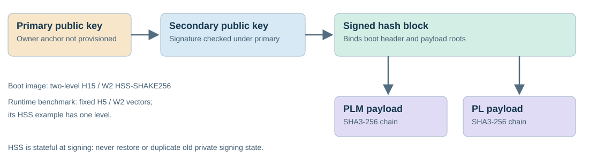
What “post-quantum” means
HSS/LMS are hash-based signature constructions intended to resist cryptanalytic attacks from quantum computers. SU35P boot authentication uses HSS-SHAKE256.
This is classical cryptography running on classical hardware. Its mathematical construction supplies the post-quantum property.
What to avoid claiming
No quantum-interference shield, quantum processor or demonstrated ML-KEM key exchange. FPGA placement alone does not make a signature quantum-resistant.
No claim of NIST module validation or compliance with the full SP 800-208 signing-system requirements.
python lab.py verify # Fresh real-design signing/encryption after build: python lab.py boot
{
"spk_signature_valid": true,
"hash_block_signature_valid": true,
"boot_header_hash_valid": true,
"signature_bytes": 9620,
"plm_bytes": 26048,
"pl_bytes": 1327536
}****** Bootgen v2026.1
**** Build date : Jun 5 2026-13:21:08
** Copyright 1986-2022 Xilinx, Inc. All Rights Reserved.
** Copyright 2022-2026 Advanced Micro Devices, Inc. All Rights Reserved.
[WARNING]: dl3 detected
[ERROR] : '-verify' option is not supported for LMS/HSS authenticated images on this architecture.NIST stateful hash-based signatures · SP 800-208
Speaker script · 20:00–23:00 · Explain the post quantum part
Operator: Do not regenerate or copy private HSS state during the show. Use the prepared image; demonstrate signing verification in the notebook.
The post-quantum signature method in this SU35P boot flow is HSS-SHAKE256. LMS is a hash-based signature system; HSS arranges LMS trees hierarchically.
The quantum threat here is mathematical: a sufficiently capable quantum computer could undermine widely used public-key systems such as RSA and elliptic-curve cryptography. Hash-based signatures provide a different construction intended to withstand that threat.
There is no quantum interference shield in this FPGA. The chip runs classical cryptographic algorithms. The same signature mathematics can be implemented in software. The device benefit is integrating verification with configuration, not making an algorithm quantum-resistant merely by putting it in hardware.
State management matters on the signing side. These signatures consume one-time signing opportunities. Restoring an old private-key backup or duplicating signing state can reuse an opportunity and undermine security. Our build creates fresh development keys and advances state in place.
AES-256, SHA3 and SHAKE also play roles in the overall design. They do not perform the same job as the public-key signature. We are not demonstrating a post-quantum key-exchange protocol such as ML-KEM today.
This is a functional experiment, not a claim of NIST module validation or compliance with the full SP 800-208 signing-system requirements.
My notes for this chapter
Post-Quantum Boot Process and Options
Follow HSS-SHAKE256 signing and verification, compare the tested boot-image options, and explain the choices needed for deployment.
1 · Follow the post-quantum boot process
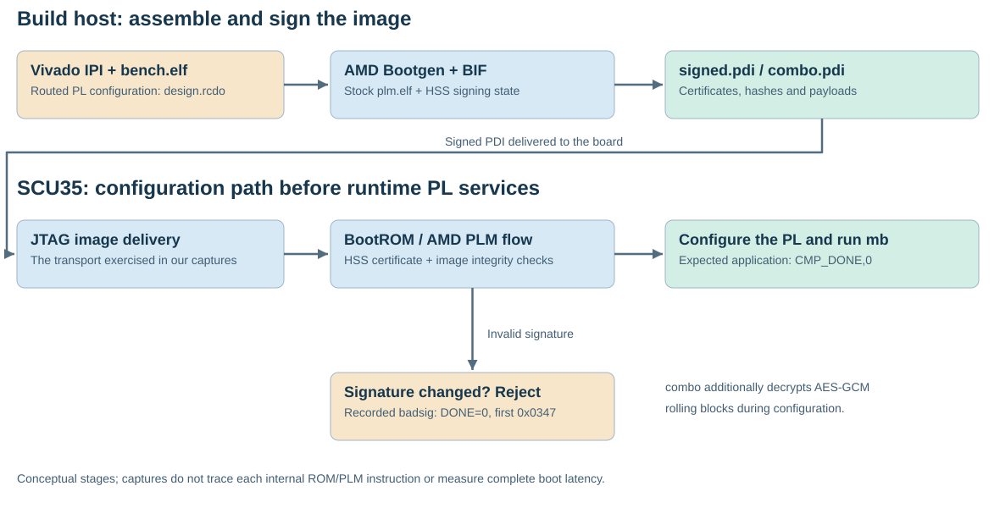
- Build the PL payload. Implement sys with the MicroBlaze V application in BRAM. The protected-image experiment reused the existing routed design.
- Package and sign on the host. Bootgen combines stock PLM, design.rcdo and certificates using
authentication=hss-shake256. Our image uses two-level H15/W2 HSS parameters. - Deliver over JTAG. The on-device configuration flow checks signatures and image integrity. The certificate chain binds the secondary key and signed hash block to the primary key; payload hash chains bind the actual data.
- Optionally decrypt. The combined image also applies AES-256-GCM with 4 KiB rolling payload blocks: 7 PLM and 331 PL blocks.
- Observe the outcome. Valid images configure and run the expected application. A one-bit signature change is rejected. Preserve both status and UART evidence, then verify stock recovery.
Vendor references: AMD UG1283 authentication certificate and device support · AMD UG1283 BIF attributes and Spartan key-source limits.
new_bif:
{
id_code = 0x04e80093
lms_key_params {
primary {lms_shake256_h15_w2, lms_shake256_h15_w2}
secondary {lms_shake256_h15_w2, lms_shake256_h15_w2}
}
ppkfile = keys01/primary.key.pub
spkfile = keys01/secondary.key.pub
pskfile = keys01/primary.key.prv
sskfile = keys01/secondary.key.prv
image {
name = pmcl_subsys
id = 0x0
partition {id=0x01, type=bootloader, authentication=hss-shake256, file=plm.elf}
partition {id=0x02, type=pldata, file=design.rcdo}
}
}
2 · Choose a demo option
| Runner variant | Protection / purpose | Recorded hardware result | Raw status |
|---|---|---|---|
plain | Baseline; no image signature or encryption | Accepted; application complete | DONE=1; 0x0 |
signed | HSS-SHAKE256 authentication | Accepted; application complete | DONE=1; 0x0 |
badsig | One signature bit changed | Rejected | DONE=0; 0x1a3b87df7defff |
combo | HSS + AES-GCM + rolling keys + DPA option | Accepted; application complete | DONE=1; 0x0 |
badroll | Controlled inner encrypted-block tamper | Rejected | DONE=0; 0x2c4b87df7defff |
zero | Encryption-only diagnostic, unmasked | Rejected | DONE=0; 0x1c4b87df7defff |
zero_mask | Encryption-only diagnostic with DPA option | Accepted; application complete; unresolved SSS_CFG_ERR | DONE=1; 0x200000 |
python lab.py hardware --mode boot --pdi /path/to/build/boot_TIMESTAMP/signed.pdi
RESULT DONE=1 ERROR=0x000000000000000 CMP_DONE,0 PROGRAM_VERIFIED DONE=1 ERROR=0
3 · Understand the deployment choices
| Choice | Current demo / evidence | What remains |
|---|---|---|
| Signing versus enforced ownership | Signature checks work; unsigned baseline also loads | Owner-key pinning, revocation and permanent policy enforcement are not tested |
| Encryption root | Combined image selects existing efuse_red_key path with a PUBLIC ALL-ZERO diagnostic root | No production confidentiality; no key or eFUSE programming performed |
| Other boot key sources | AMD lists efuse_red_key, efuse_blk_key, efuse_gry_key, bh_gry_key and bh_blk_key for Spartan UltraScale+ | Only the stated red-key diagnostic flow is demonstrated here; do not import BBRAM recipes from another family |
| PUF | Runtime registration and five clear/regenerate/decrypt cycles pass | PUF-wrapped boot and persistent helper-data provisioning remain untested |
| Transport | JTAG configuration tested | Flash / OSPI / SelectMAP boot needs separate board-specific validation |
| Performance | Runtime LMS/HSS verification measured separately | Those numbers are not full signed-PDI boot latency |
| DPA option and rolling keys | Combined image accepts dpacm_enable and 338 rolling payload blocks | Physical side-channel resistance was not measured |
Presenter narration · 6–8 minutes
Open the chapter script and screen cues
First, let’s open the actual design. The box called mb is a MicroBlaze V in programmable logic. Its instruction and data memories are local BRAM. Its AXI data port reaches the UART, timer and PMC bridge. The bridge is our route to the hardened security functions after configuration.
There is another processor involved earlier: the dedicated PMC. The PLM ELF belongs to that configuration environment. The bench ELF belongs to our PL processor. Keeping those two programs separate explains why our application is not the thing deciding whether its own boot image can be trusted.
Now follow the image from left to right. Vivado supplies the configured design, and Bootgen packages it alongside the stock PLM. We select HSS-SHAKE256 authentication for this SU35P. The private signing state stays on the build host; verification material and signatures travel in the image.
The board receives that PDI over JTAG. During configuration, the boot flow validates the authentication chain and the data it protects. We can show both outcomes: the signed image starts our expected program, while changing one signature bit prevents configuration from completing.
Next, we use the combined image. Authentication and encryption do different jobs. HSS checks the signed image, while AES-GCM protects encrypted blocks and checks their tags. Rolling keys change key material across those blocks. Our diagnostic root is publicly known, so this proves the process, not secrecy.
There is one final boundary to explain. This loaner has no owner-key policy provisioned by us. It still accepts the unsigned baseline. We have demonstrated post-quantum signature verification during configuration, but not a permanently locked product that boots only our releases.
Once configuration succeeds, we return to the IPI diagram. Now our MicroBlaze V program can use the PMC bridge for hashing, AES and the temporary PUF lifecycle. That connects secure configuration to useful runtime services, while keeping the two phases distinct.
My notes for this chapter
Configuration demos
Keep the command, accepted/rejected result and recovery evidence together.
| Image | DONE | Raw error | First error | Application | Recovery |
|---|---|---|---|---|---|
| plain | 1 | 0x0 | 0x0 | Completed | Verified |
| signed | 1 | 0x0 | 0x0 | Completed | Verified |
| badsig | 0 | 0x1a3b87df7defff | 0x347 | Not completed | Verified |
| zero | 0 | 0x1c4b87df7defff | 0x389 | Not completed | Verified |
| zero_mask | 1 | 0x200000 | 0x0 | Completed | Verified |
| badroll | 0 | 0x2c4b87df7defff | 0x589 | Not completed | Verified |
| combo | 1 | 0x0 | 0x0 | Completed | Verified |
combo.pdi
Main clean demonstration: HSS signatures + AES-GCM encryption + rolling keys + dpacm_enable. Public-zero AES root through the existing eFUSE-selected path.
python lab.py hardware --mode boot --pdi /path/to/build/boot_TIMESTAMP/combo.pdi
TARGET 52041A454A5PA xcsu35p 04e80093 PROGRAM_CALL_FAILED 0 PROPERTY REGISTER.ERROR_STATUS.BIT[42:31]_LAST_ERROR 000000000000 PROPERTY REGISTER.ERROR_STATUS.BIT[54:43]_FIRST_ERROR 000000000000 RESULT DONE=1 ERROR=0x000000000000000 CMP_META,2,100000000,20,10,7f0f05e3c7820bf9,11 CMP_DONE,0 PROGRAM_VERIFIED DONE=1 ERROR=0
See the exact combined-image BIF
new_bif:
{
id_code = 0x04e80093
lms_key_params {
primary {lms_shake256_h15_w2, lms_shake256_h15_w2}
secondary {lms_shake256_h15_w2, lms_shake256_h15_w2}
}
ppkfile = keys01/primary.key.pub
spkfile = keys01/secondary.key.pub
pskfile = keys01/primary.key.prv
sskfile = keys01/secondary.key.prv
image {
name = pmcl_subsys
id = 0x0
partition {id=0x01, type=bootloader, authentication=hss-shake256, encryption=aes, keysrc=efuse_red_key, dpacm_enable, aeskeyfile=combo_plm.nky, blocks=4096(*), file=plm.elf}
partition {id=0x02, type=pldata, encryption=aes, dpacm_enable, aeskeyfile=combo_pl.nky, blocks=4096(*), file=design.rcdo}
}
}
zero_mask completed but latched SSS_CFG_ERR. The clean presentation image is combo. The encrypted-tamper first error 0x0589 is retained without inventing a vendor description.Speaker script · 23:00–29:00 · Demonstrate the plain and signed configuration paths
Operator: In 02_auth, set RUN_HARDWARE=True in setup and execute its optional-live cell once. It runs plain → signed → badsig sequentially, with stock recovery after each. Continue to the result table and UART-validation cells. Do not separately invoke terminal programming while this cell runs.
We will now compare configuration security modes using the same physical loading interface: JTAG. This is not a comparison of booting from flash, SelectMAP and serial interfaces. Those are separate transport experiments.
First, the plain PDI. We expect DONE high, no configuration error, and our application’s build ID followed by its results. A script returning successfully is not enough; we also check the device status and application output.
Next, the HSS-signed PDI. It contains the same real payload. The difference is the signing information around it. We expect it to configure and run the same application.
Here is the negative test. I have changed exactly one bit in the image’s signature, while leaving its design payload unchanged. This is useful because we can isolate a signature failure instead of merely proving that a random broken file does not load.
The valid image runs. The one-bit signature variant fails with DONE low. Its first error is 0x0347, the SU35P hash-block signature verification failure. The later secure-lockdown status is a consequence of that failure, not a second independent signature experiment.
The runner restores our pinned stock control image after each attempt. We wait for recovery and verify DONE and error status again before proceeding.
Speaker script · 29:00–35:00 · Demonstrate signed encrypted configuration with rolling keys
Operator: In 03_rolling, set RUN_HARDWARE=True and execute its optional-live cell once. It runs combo → badroll with recovery. Show the 7 + 331 block counts and payload matches before the hardware step. Leave the unresolved encryption-only attempt in the report rather than presenting it as clean.
Now we combine HSS signatures, AES-GCM encryption and rolling keys in one PDI. This is our main encrypted demonstration image, named combo.pdi. It also enables the image’s DPA-countermeasure option.
The key choice is important: this demonstration deliberately uses a public all-zero AES root through the existing eFUSE key-source path. We have not programmed that key into the board. Successful loading shows that this board accepted the image through that path; it is not a readout of every fuse value.
Because the root is public, this is not a confidentiality demonstration against an attacker who knows the key. It lets us demonstrate real encrypted configuration on a loaner without permanently provisioning it.
Before loading, Python independently checks the signing chain, follows every rolling-key block, and recovers the exact original PLM and PL payloads. After loading, the board must reach DONE with no error and run the expected application.
That is the combined result: the signed and encrypted rolling-key image configures, and the actual application runs. In the recorded clean test, DONE is one and the error register is zero.
We also have a controlled encrypted-tamper specimen. It is based on the separate encryption-only public-zero image. We alter an inner ciphertext bit, repair its outer hash and hash-block authentication using the known diagnostic root, and deliberately leave the inner GCM tag invalid. That checks rejection beyond the outer integrity layer.
The offline verifier rejects its inner GCM tag, and hardware rejects that specimen too. The captured first error is 0x0589. We are reporting that numeric result without assigning it an unverified vendor description.
Our earlier encryption-only attempt had an SSS configuration error bit even though its application ran. We retained it in the report. The combined image is the clean success we use here.
We have demonstrated signature checking, encrypted configuration and tamper rejection. We have not permanently pinned an owner’s key or forced this loaner to reject every plain image. In fact, the plain-image test showed that plain configuration remains possible.
My notes for this chapter
PL service interfaces
Explain who runs the software and where control, payload data and captured results travel.
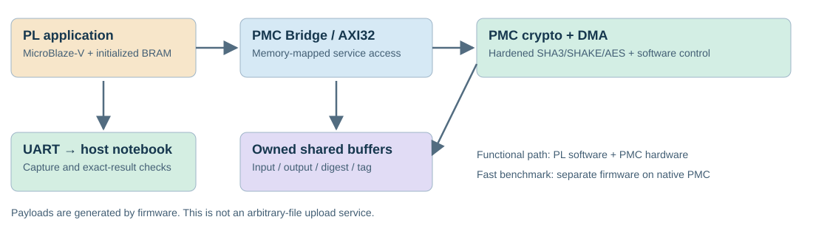
| Actual design element | Purpose |
|---|---|
mb | MicroBlaze-V soft processor runs the functional application |
mb_local_memory | Application and local data in PL BRAM |
axi | Interconnect for memory-mapped interfaces |
pmc | PMC bridge service access |
uart | UART results to COM10 |
cycles_0 / timer | Nominal 100 MHz PL cycle-count measurements |
Functional PL path
PL MicroBlaze-V → bridge → PMC engines / DMA.
Fixed firmware-generated payloads, vendor driver APIs, exact Python comparisons. Application build ID: 7f0f05e3c7820bf9.
Native performance path
Native PMC CPU → hardened SHAKE / AES.
A separate laboratory image minimizes the PL soft-CPU service path. Its measurements do not describe an arbitrary host upload or physical-link benchmark.
CMP_META,2,100000000,20,10,7f0f05e3c7820bf9,11 CMP_DONE,0
Speaker script · 35:00–38:00 · Move from boot protection to general user payloads through PL
Operator: Use scu35_cmp.ipynb for the PL interface tests. For a fresh runtime run, use its RUN_HARDWARE=True path once; do not confuse that flag with the flags in the boot notebooks. Otherwise explicitly identify the saved capture being inspected.
So far the protected object has been the configuration image itself. Now the board is running, and the protected object is data produced by an application.
Our application runs on a MicroBlaze-V processor implemented in the PL. It accesses the PMC services through the design’s bridge and memory-mapped interface. Shared buffers and PMC DMA are part of moving data to the cryptographic engines. UART carries the results back to this computer.
That is an example of using the hardened security resources from a PL application. It is not a newly implemented AES or SHAKE algorithm in LUTs. It is also different from our native-PMC performance image, where the verifier itself executes on the PMC processor.
The payloads here are deterministic firmware-generated test messages at several sizes. The current tutorial checks those actual messages against Python. It is not an interactive service accepting any arbitrary file from the host.
The application already executes these tests automatically when the design starts. We will now unpack the captured results method by method, and we can run a fresh complete capture if needed.
My notes for this chapter
User payload demos
Browse the real test data and explain what constitutes a positive and negative result.
This chapter demonstrates correctness through the PL application. Chapter 15 shows the separate resident-buffer DMA performance path and explains exactly what data moves.
Select a message size and hash method. These bytes are from the captured hardware application; no browser calculation is being presented as SCU35 output.
Input prefix, hexadecimal
Recorded hardware digest
import hashlib data = bytes((i % 251) + 1 for i in range(2048)) print(hashlib.sha3_256(data).hexdigest()) print(hashlib.shake_256(data).digest(32).hex())
CMP_HASH,SHA3-256,2048,D436B7F10419537A3E575BE7F9A75BD68F5A0E2BEC716D3E0AF4268CEBB5180E CMP_HASH,SHAKE-256,2048,34A087F01B4B733899229024B63BFD9572F3FC8BE5032954250ED1E71E8CC70B
Runtime AES uses the public test key 00 01 … 1f in volatile USER_KEY_0. It is separate from the public-zero eFUSE-selected root used by the boot image.
CMP_AES,64,FDC61DB139ED157100000028,6309CB2FCD9E3BBA4BCF128E5DD400AE7CE9516A456744E22CB780FAC9AFEFC0CE910A82C6F9F2190D2E620C081B58E19A7B8ACE1D2320CF9E3442294EF4F789,6011DE42BE4055B3C12E442CFCE742EB CMP_NEG,AES-GCM,64,64
from cryptography.hazmat.primitives.ciphers.aead import AESGCM
key = bytes(range(32)) # public diagnostic key
data = bytes((i % 251) + 1 for i in range(64))
iv = bytes.fromhex("FDC61DB139ED157100000028")
ciphertext = bytes.fromhex("6309CB2FCD9E3BBA4BCF128E5DD400AE7CE9516A456744E22CB780FAC9AFEFC0CE910A82C6F9F2190D2E620C081B58E19A7B8ACE1D2320CF9E3442294EF4F789")
tag = bytes.fromhex("6011DE42BE4055B3C12E442CFCE742EB")
assert AESGCM(key).encrypt(iv, data, None) == ciphertext + tag
assert AESGCM(key).decrypt(iv, ciphertext + tag, None) == data
print("Captured hardware ciphertext/tag match; plaintext recovered")CMP_ROW,LMS-SHAKE256,valid,56,10,0,4360,12597719,0,1259758,1259785,0 CMP_ROW,LMS-SHAKE256,bad_signature,56,10,0,4360,11762968,0,1176280,1176307,171 CMP_ROW,LMS-SHAKE256,bad_message,56,10,0,4360,12418288,0,1241817,1241839,171 CMP_ROW,LMS-SHAKE256,bad_key,56,10,0,4360,12597583,0,1259748,1259776,171 CMP_ROW,HSS-SHAKE256,valid,56,10,0,4360,11838784,0,1183867,1183891,0 CMP_ROW,HSS-SHAKE256,bad_signature,56,10,0,4360,12642344,0,1264218,1264252,171 CMP_ROW,HSS-SHAKE256,bad_message,56,10,0,4360,12314744,0,1231466,1231487,171 CMP_ROW,HSS-SHAKE256,bad_key,56,10,0,4360,11838760,0,1183860,1183885,171
CMP_FEATURE,TRNG-HRNG-SETUP,1,3622561,0 CMP_ROW,TRNG-HRNG,generate,32,20,0,0,3241087,0,650,3228737,0 CMP_RANDOM,TRNG-HRNG,22617616A90E47A00B261364BFBBBD6C47C220E6C09401DFAE480B6549DA1AC8 CMP_FEATURE,TRNG-DRNG-SETUP,1,3675559,0 CMP_ROW,TRNG-DRNG,generate,32,20,0,0,13381,0,640,1221,0 CMP_RANDOM,TRNG-DRNG,E811DBDB335CFA9C13EDD47B7542B894991681F8C7FDBEF994AAB9DC0DA32D7D CMP_FEATURE,TRNG-PTRNG-SETUP,1,3621858,0 CMP_ROW,TRNG-PTRNG,generate,32,20,0,0,17201630,0,859599,861113,0 CMP_RANDOM,TRNG-PTRNG,BA9F8EB2BDDE57ED03B0AB56C75F52DE5FF3DEA886DD14B77573C8B4AE19CE68
Speaker script · 38:00–42:00 · Demonstrate SHA3 SHAKE and user payload signatures
Operator: Show SHA3/SHAKE exact matches and all valid/bad_signature/bad_message/bad_key rows. For the native timing table later, note that its HSS vector has one level and is not the complete boot certificate.
For SHA3 and SHAKE, correctness means exact byte equality. We give Python and the FPGA the same message, choose the same digest parameters, and compare every output byte. Similar-looking hexadecimal values would not be enough.
We test messages from 16 through 2048 bytes. SHA3-256 returns 32 bytes. In this SHAKE test we also request 32 bytes, although SHAKE can produce other output lengths.
Now we verify a signed user payload. The running application gets a public message, public key and signature. A valid combination should pass. A changed message, changed signature or wrong public key should fail.
This operation can protect an update manifest or another application-level object when a system supplies a trustworthy key and handles the result correctly. We are demonstrating the primitive and its acceptance decision; the production application must still decide what that decision authorizes.
The runtime vectors here use different parameters from the two-level H15 boot-signing image. Successful runtime verification does not by itself prove BootROM authentication. That is why we did the separate configuration experiment first.
Speaker script · 42:00–47:00 · Demonstrate AES protected user data and PUF key regeneration
Operator: Point out the difference between expected zeroized-PUF-source rejection and successful regeneration. Show CMP_PUF_ROUNDTRIP,5,0. Do not print helper data or claim the driver’s early rejection was an attempted AES decrypt.
For general user data, our first AES-GCM test uses a public diagnostic key loaded into a volatile user-key slot. This is a different key source from the all-zero eFUSE-selected boot example.
We encrypt a known payload, compare the ciphertext and authentication tag with Python, and decrypt it back to the original message. Each encryption uses a fresh nonce within the test flow. A GCM nonce must not repeat with the same key.
We then change the tag. The operation must report failure. An application must treat failed authentication as a rejection and must not use unauthenticated output as valid data.
Now we change the key source to the PUF-derived key. Python cannot reproduce this device’s physical PUF, so the proof changes: we keep the secret inside the device and demonstrate successful use of the regenerated key.
First we register and retain the helper data temporarily. We encrypt test data. Next we clear the PUF key. The driver rejects that cleared key source before decryption, which is the expected negative result. It does not mean the original ciphertext disappeared.
We regenerate using the same helper data and decrypt the saved ciphertext. The recovered plaintext must match. We repeat clear, rejection, regeneration and successful decryption five times.
This shows that the key can be made usable again in the same session without us printing or exporting the secret. It does not prove every device has a different key, long-term environmental reliability, or persistence across a power cycle.
For a real product, the next design question is where helper data lives and how its integrity and provisioning are managed. Our loaner experiment deliberately leaves that permanent deployment step out.
My notes for this chapter
Performance and tradeoffs
Explain the result without overselling acceleration or mixing the native and PL implementations.
SHA and AES user-payload benchmark results
Recorded native-PMC measurements ? October 25, 2026. Each time is the median of batch-average processing times per message, using warm resident buffers. MB/s uses decimal megabytes.
| Method | Message size | SCU35 time (?s) | SCU35 MB/s | Python time (?s) | Python MB/s |
|---|---|---|---|---|---|
| SHA3-256 | 1 MiB | 2,248.86 | 466.27 | 2,434.82 | 430.66 |
| SHAKE-256 | 1 MiB | 2,248.86 | 466.27 | 2,565.59 | 408.71 |
| AES-GCM-ENC | 8 KiB | 39.20 | 208.98 | 3.51 | 2,332.04 |
| AES-GCM-DEC | 8 KiB | 39.15 | 209.24 | 3.30 | 2,481.07 |
| AES-GCM-ENC-STREAM | 1 MiB | 4,452.07 | 235.53 | 316.24 | 3,315.77 |
Effective payload bandwidth: approximately 3.73 Gb/s for hashing and 1.88 Gb/s for streamed AES encryption. These are processing rates, not measured physical bus limits.
What data actually passes through the engines?
On-device pattern ? 8 KiB resident input ? PMC DMA / secure stream switch ? SHA or AES hardware. SHA returns a digest; AES writes ciphertext/plaintext to an 8 KiB resident output buffer and produces/checks a GCM tag. For 1 MiB messages, the same input chunk is submitted repeatedly; streamed AES output reuses the output buffer.
The host starts batches and retrieves results over JTAG outside the timing interval. This is not an arbitrary Python file upload or a live PL/HyperRAM streaming benchmark. The PL MicroBlaze V vendor-driver application is a separate path, measured with AXI Timer.
Correctness boundary: exact hash comparisons and full AES encrypt/decrypt comparisons through 8 KiB, including bad-tag rejection. For 64 KiB / 1 MiB streamed encryption, the final 8 KiB ciphertext and full-message tag were checked; every intermediate ciphertext block was not read back. Streamed decryption is not demonstrated.
LMS and HSS user-payload verification results
Recorded native-PMC measurements ? October 25, 2026. Both methods verify the fixed AMD vectors: 56-byte messages, approximately 4.46 KiB signatures, and one-level HSS. The verifier runs on the PMC processor and uses hardened SHAKE hardware.
| Method | SCU35 median | SCU35 verifications/s | Python median | Python verifications/s |
|---|---|---|---|---|
| LMS-SHAKE256 | 0.984 ms | 1,016 | 0.542 ms | 1,844 |
| HSS-SHAKE256 | 0.927 ms | 1,079 | 0.600 ms | 1,667 |
LMS-SHAKE256 timing breakdown
HSS-SHAKE256 timing breakdown

Both accepted valid signatures and rejected modified signatures, messages and public keys; malformed-input guards also passed. JTAG vector upload and result retrieval are outside the timed intervals. Completion polling may introduce unquantified contention. These runtime verification timings are separate from full signed-PDI boot latency.
Timing sources, methodology and additional bulk charts
| Dataset / execution path | Timing instrument | Status and interpretation |
|---|---|---|
sec35/timer — current PL benchmark | AMD AXI Timer, nominal 100 MHz; coherent 64-bit reads | 31 timing rows plus PUF lifecycle timings. Firmware 7d1bf77bc454dd1f. CMP v2 elapsed fields remain 32-bit. |
sec35/compare — original PL benchmark | Custom cycles_0 counter read through AXI GPIO, nominal 100 MHz | Retained historical measurements; not relabeled as AXI Timer results. |
| Signed / encrypted boot-image application captures | Original custom-counter PL application | These images still contain the original PL design. Their runtime rows are not full boot latency measurements. |
sec35/fast — native PMC bulk crypto and LMS/HSS | PMC mcycle; frequency estimated against the nominal 100 MHz PL reference | Existing native-PMC image. The 0.984 / 0.927 ms LMS/HSS results use this counter, not AXI Timer. |
| Python references | Host time.perf_counter_ns() | A separate host clock, independent of either FPGA counter. |
| XilNvm read-only walkthrough | No measured timing row | Not included in the current 31-row benchmark; no new eFUSE readout claimed. |
| Measurement | Included | Excluded / limit |
|---|---|---|
| Native LMS/HSS | Parsing, padding, SHAKE setup, DMA waits, all digest reads, verification logic | JTAG upload and result readout are outside the interval |
| Desktop Python | Python control flow and native hashlib calls | Not a pure interpreted hashing implementation |
| Bulk native throughput | Warm resident chunks, per-message setup and DMA completion checks | Not measured host-to-board or HyperRAM bandwidth |
| Hash digest timing detail | Final bulk digest read once after timed batch | Python returns a digest per call; not identical readback cost |
| HSS versus LMS ordering | Different vectors: 185 versus 200 valid hash calls | No general claim HSS is inherently faster |
| Energy and side channels | Not measured | No efficiency, physical-security or silicon-maximum claim |

Speaker script · 47:00–53:00 · Show random number modes and interpret performance honestly
Operator: Use the saved native report for timing unless intentionally running its separate hardware image. Show table columns and timing boundary. Do not infer that JTAG is inside the measured verification interval, or that DMA traffic estimates are measured HyperRAM bandwidth.
We can also call the random-number generator in its supported operating modes. Unlike a hash known-answer test, two independently generated random strings generally should not be equal. Here we show setup, status, output size and basic checks. That is not an entropy certification.
One deterministic-generator example deliberately uses a public seed for repeatability. Its predictable behavior is useful for a test, but it is not a source of production secrets.
For performance, I am now switching views to a different implementation: the native-PMC benchmark. These figures are not the timings of the PL application we just inspected.
The native verifier measured about 0.984 milliseconds for the LMS vector and 0.927 milliseconds for the HSS vector. On this desktop, Python measured about 0.542 and 0.600 milliseconds. Python wins this particular comparison.
Python is calling optimized native hashing code on a desktop processor. Our SCU35 verifier is software running on the native PMC processor and using hardened SHAKE. About seventy percent of the measured verification time is still software processing, copying and padding. This is a hardware-assisted verifier, not a fully hardwired LMS pipeline.
The HSS result should not be read as proof that HSS is inherently faster than LMS. These are different test vectors and their verification paths execute different numbers of hash calls.
The device advantage is the integration we demonstrated: checking configuration before the design runs, and letting an embedded PL application use on-device cryptographic services. We have not measured energy per verification, so I will not claim an energy advantage.
Our timed verification intervals exclude the JTAG upload and result readout. They include the native software and SHAKE setup, DMA waits and digest reads. These are warm-buffer batch-average measurements, not end-to-end host request latency or complete-PDI boot time.
Bulk hashing and AES tell a different performance story from signatures. Our fastest measured native bulk cases are roughly 466 megabytes per second for hashing and 235 megabytes per second for streamed AES encryption. Those rates do not turn into an equivalent number of signature verifications, because signatures require many dependent hashes and additional control work.
My notes for this chapter
Screenshots and evidence
Enlarge report and notebook screenshots during the presentation, then open their source files when needed.
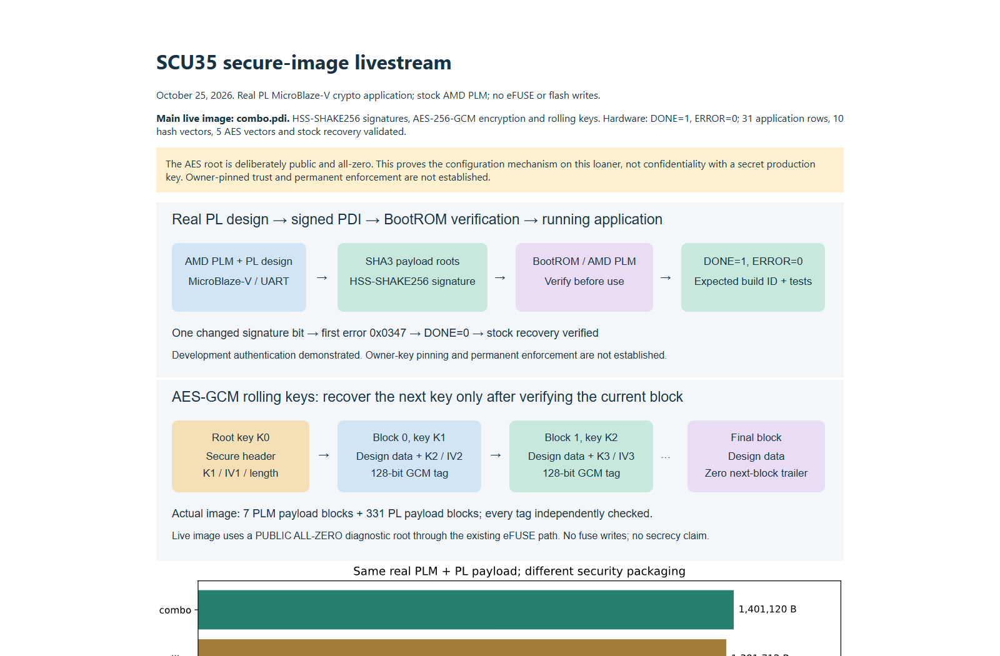
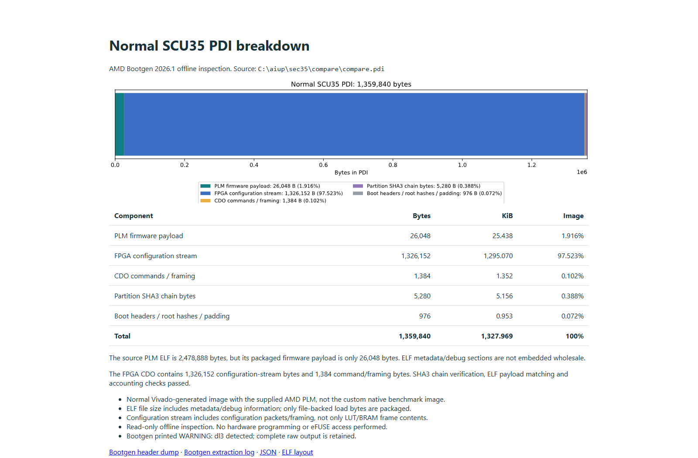
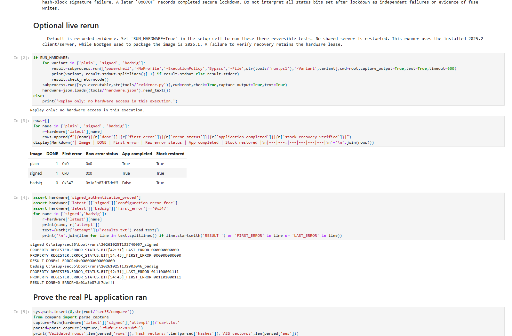
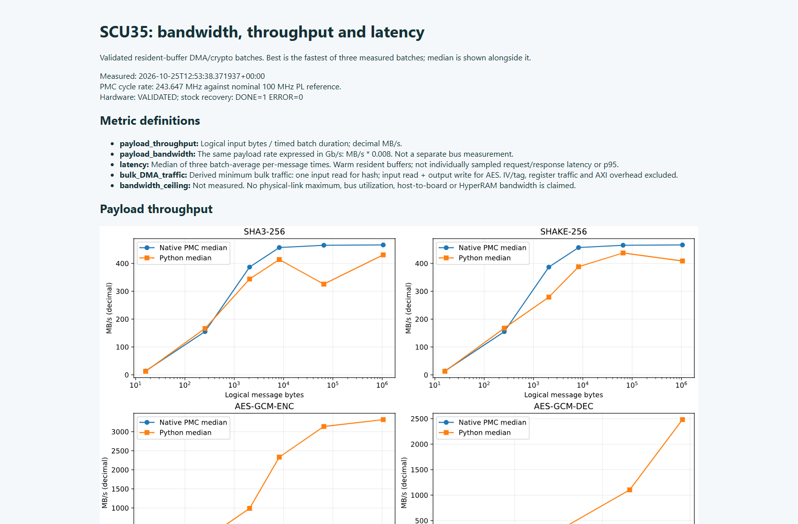
My notes for this chapter
Runbook and questions
Preflight, external command recipes, recovery rules and concise audience answers.
python lab.py verify # Fresh real-design signing/encryption after build: python lab.py boot
{
"overall": "PASS",
"artifacts": 195
}python lab.py verify # Fresh real-design signing/encryption after build: python lab.py boot
python lab.py hardware --mode native --pdi /path/to/build/native/build/pmc_independent.pdi
Audience questions
Why not just run Python?
For these signature vectors, the desktop is faster. The device advantage is integrating the verification decision with configuration and embedded use. A desktop verifier alone does not make the FPGA refuse a modified image.
Is all of LMS or HSS implemented in dedicated hardware?
No. In our native benchmark, firmware runs the verification logic and calls hardened SHAKE. BootROM configuration authentication is a separate tested path.
Does this protect against quantum interference?
Post-quantum refers to resistance to cryptanalytic attacks using quantum computers. It does not mean physical shielding from quantum effects, electrical interference or fault injection.
Does the zero key mean the device is secure by default?
No. The key is public, so it provides no secrecy against anyone who knows it. We used it to demonstrate the existing key-source path without programming fuses.
Did we prove all the eFUSE values are zero?
No. Image acceptance through the selected key path is not a full fuse readback. We did not perform a before/after fuse dump.
Will the loaner reject all unsigned images now?
No. Plain configuration also worked. Owner-key pinning and permanent enforcement were not established or changed.
Is the PUF helper data the secret key?
No. It supports regeneration and needs appropriate integrity and provisioning controls. Our same-session demonstration retains it in temporary memory and does not export the secret.
Can the host send any arbitrary payload in this tutorial?
The present PL application generates fixed test payloads. We compare their bytes with Python. An interactive upload service would be a separate application feature.
Why is HSS faster than LMS in the table?
Those are different vectors and hash-call counts, and the HSS benchmark has one level. This is not a general ordering of the algorithms or a timing of the two-level boot signature.
Is the PDI a complete copy of plm.elf?
No. The image includes the loadable program bytes and packaging structures, not the entire ELF container and all its metadata.
Was encrypted boot tested with PUF wrapped keys?
No. The working encrypted boot image uses the public-zero eFUSE-selected root. PUF-derived data encryption and regeneration were demonstrated separately at runtime.
Did we prove side channel resistance or NIST compliance?
No. We enabled documented image options and checked functional behavior. We did not perform side-channel measurements or qualify a production signing module.
Presentation files
Authoritative references
- AMD Spartan PDI format
- AMD boot time security
- AMD authentication certificate
- AMD Spartan rolling keys
- AMD PUF description
- NIST stateful hash based signatures
- NIST SP 800 208
- NIST post quantum FAQ
Speaker script · 53:00–55:00 · Close with the demonstrated results
Operator: Leave the report and notebook links on screen. Show recovery evidence; do not claim a complete backup of the owner’s prior application.
We started with the PMC, BootROM and PLM, then inspected the actual PDI rather than treating it as a renamed bitfile.
We loaded a signed real design, changed one signature bit and watched configuration reject it. We loaded a signed and encrypted image with rolling keys, and independently recovered the same original payload from every protected block.
We then moved to the running PL application: exact hash comparisons, signature verification, AES-GCM encryption and tamper detection, PUF key clearing and regeneration, and random-number services.
The notebooks contain the recipes, captured results and timing boundaries. Their default mode replays dated evidence, and their live mode performs fresh volatile tests with recovery.
This loaner is back on the stock recovery image. We did not program eFUSEs or boot flash. The public-zero AES root and unprovisioned owner-trust policy keep this a mechanism demonstration. A deployed product would need its own secret keys, trust policy, provisioning and validation.
The engineering question to take away is: where does the system make its trust decision, which key does it trust, and what happens when a check fails? Today we followed those decisions from the configuration package into the running FPGA application.
My notes for this chapter
A complete Ethernet crypto design
Send actual host payloads through the SCU35 Ethernet port, use hardened PMC AES/SHA after configuration, and inspect verified results in a local dashboard.
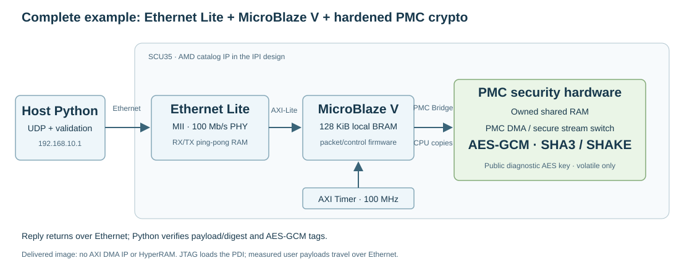
1 · Inspect the complete design
IPI and memory
MicroBlaze V, 128 KiB local BRAM, MDM, SmartConnect, PMC Bridge, AXI UART Lite, AXI Timer, Clocking Wizard, Processor System Reset, constants and AXI Ethernet Lite with RX/TX ping-pong packet RAM. The top wrapper and MDIO I/O buffer are generated by Vivado; no custom functional HDL is required.
36/48 BRAM tiles · 2,952 LUTs. Firmware uses 67,728 local bytes and 2,784 owned PMC shared bytes. No HyperRAM is required.
Inspect the BD Tcl export · Rebuild the IPI designSoftware and transport
Bare-metal MicroBlaze V firmware handles ARP, ICMP and UDP. It uses AMD XilSecure for AES-GCM and SHA3/SHAKE, plus the hardened PMC DMA and HRNG-derived response nonce prefix. Python validates every returned payload or digest.
192.168.10.1 → 192.168.10.2:6000
16–1,024 byte inputs, multiples of 16. This is a small IPv4 lab endpoint, not TLS, IPsec, MACsec or a full network stack.
2 · Choose what to demonstrate
| Experiment | What actually runs | Proof to inspect |
|---|---|---|
| Plain UDP echo | Plain request and reply baseline | Returned bytes equal the submitted payload |
| AES-GCM encrypted response | Plain request; hardened AES encrypts and authenticates the reply | Python verifies the reply tag and exact plaintext |
| AES-GCM authenticated round trip | Board authenticates/decrypts the request, rejects replay, then encrypts the reply | Good packet accepted; altered tag and repeated authenticated packet rejected |
| SHA3-256 / SHAKE-256 | PMC hashes input and returns an AES-GCM-protected 32-byte digest | Exact comparison against Python hashlib |
| LMS / HSS buttons POST-QUANTUM | Inspect recorded native-PMC signature tests and their progress/latency plots | Valid signature accepted; modified message/signature/key rejected. Full LMS/HSS does not run over Ethernet in this image. |
3 · Build IPI → XSA → BSP → ELF → PDI
Install the lab's Python dependencies and AMD Vivado/Vitis 2026.1 with SU35P support. Hardware programming uses a Vivado client matching the running hardware-server release. Windows is the tested hardware/build host; offline replay is checked on Windows and Linux. A fresh hardware build also needs an AMD-supported host OS and cable drivers.
git clone --branch scu35-pmc-lab https://github.com/AEW2015/amd_examples.git cd amd_examples/scu35 python -m venv .venv # Activate .venv using your shell, then: python -m pip install -r requirements.txt python lab.py verify python ethernet/verify_capture.py ethernet/evidence/run2/ethernet/results.json
python ethernet/build.py --tools /path/to/AMD/2026.1 --out /short/e35 # Or use --phase hardware, platform, firmware or image to practice each stage.
Replace the paths with your installed tools and a fresh, shallow build directory without spaces. A Windows example is C:/e35; a Linux example is /tmp/e35. The build creates prj/eth.xpr, hw.xsa, eth.elf, ethernet.pdi, plm.elf, routed checkpoint and reports. The application ELF initializes BRAM in the PDI; no separate debugger load is needed.
4 · Run the payload notebook and local dashboard
Connect the dedicated host Ethernet adapter directly to the SCU35. Configure that adapter as 192.168.10.1/24, confirm the exact JTAG cable and UART, and choose an appropriate known-good recovery image and SHA256. The included timer image is a lab runtime baseline, not the owner's factory image. Use one host client at a time: the authenticated endpoint pins one peer session per boot.
python ethernet/run_hardware.py --vivado /path/to/matching/vivado --pdi ethernet/reference/ethernet.pdi --restore reference/timer/compare.pdi --restore-sha256 4cde96513b9d7de10e8b4dee8574b11a36539797548163491d4021c020f291ce --cable YOUR_EXACT_CABLE --serial YOUR_UART --server localhost:3121 --out /short/e35run --restore-completion-marker CMP_DONE,0
Open the Ethernet notebook for replay-first inspection and optional live payload checks. Replay uses saved packets; it does not reprogram the board. The separate hardware runner records programming, UART, payload checks and recovery; investigate retained reservations if recovery fails.
python ethernet/dashboard.py --vivado /path/to/matching/vivado --pdi ethernet/reference/ethernet.pdi --restore reference/timer/compare.pdi --restore-sha256 4cde96513b9d7de10e8b4dee8574b11a36539797548163491d4021c020f291ce --cable YOUR_EXACT_CABLE --serial YOUR_UART --out /short/e35dash --port 8035 # Open http://127.0.0.1:8035/ locally. This is not a GitHub Pages hardware service.
The dashboard programs the volatile image and retains the board reservation while running. Switch algorithms and payload size, compare latency, inspect packet bytes, run tag/replay checks, and choose presentation pacing or unpaced traffic. Use Restore board & stop traffic when finished; the page stays open to show verified recovery.
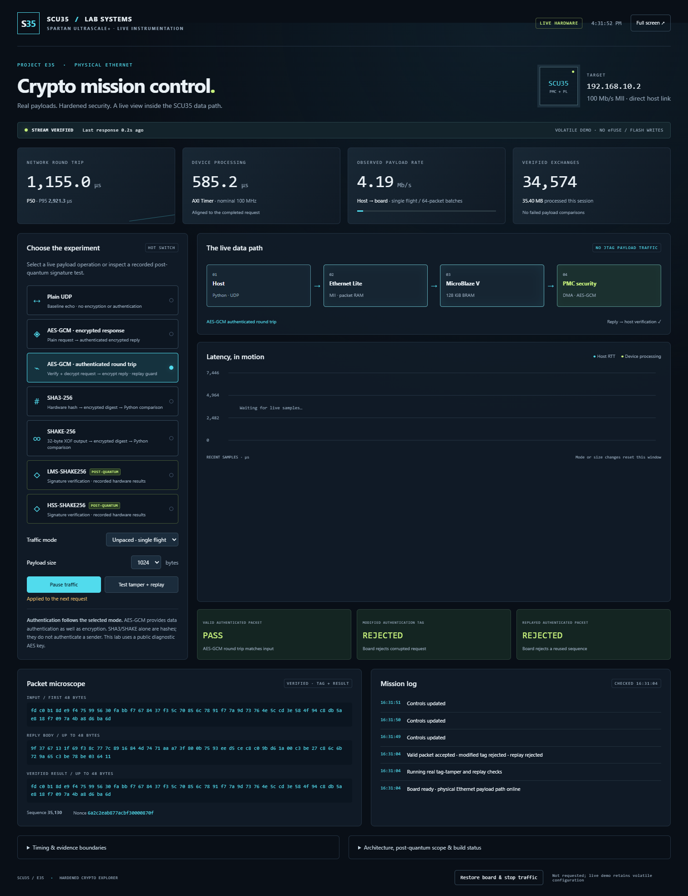
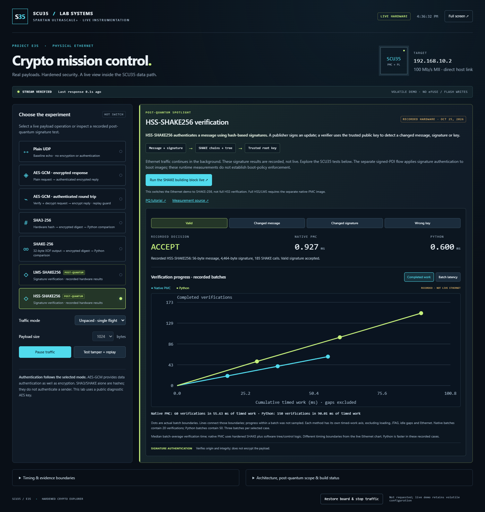
5 · Audit correctness, timing and limits
| 1 KiB operation | Recorded median network RTT | Sequential payload rate |
|---|---|---|
| Plain UDP echo | 986.55 µs | 1.029 MB/s |
| PMC encrypted response | 1,051.55 µs | 0.966 MB/s |
| PMC decrypt + encrypt echo | 1,124.00 µs | 0.905 MB/s |
October 25, 2026 repeat run: 24 functional checks, 450 timed exchanges and 475 total application responses; exact packet vectors independently checked in Python; known-good runtime restored with DONE=1 and zero errors. JTAG loading is outside payload timing. These are sequential exchanges, not saturated wire bandwidth or native resident-buffer benchmarks.
Unpaced single-flight dashboard traffic was observed around 6–8 Mb/s. Short two-request probes reached 15.5 Mb/s plain and 13.5 Mb/s encrypted replies, but a later sustained two-request run timed out after 56,192 verified packets. Its cause remains unestablished; the board recovered cleanly. The delivered continuous mode therefore uses one in-flight request.
Host RTT is UDP send-to-receive, excluding preparation of that request and verification of that response. The dashboard's following stats probe reports the last completed operation's AXI Timer interval, including copies, crypto and response assembly, at nominal 100 MHz. Unpaced mode amortizes that probe over 64 verified packets. Its observed input payload Mb/s includes validation, logging and batch gaps and excludes wire overhead.
6 · What the next DMA design changes
Ethernet Lite has memory-mapped packet RAM, so AXI DMA cannot attach through an AXI4-Stream data interface. The proposed next design uses MII PHY ↔ AXI Ethernet Subsystem ↔ AXI DMA ↔ packet BRAM, with MicroBlaze managing descriptors. PMC buffer handoff still needs separate optimization. SU35P catalog and MII configuration were accepted in local probes; license reporting/output generation stalled. No DMA PDI or DMA hardware result is included.
Presenter narration
“We have used the vendor blocks in isolation. Now a real Ethernet payload reaches the FPGA, the PL processor calls the hardened crypto engines, and Python checks the result. I will change the payload, switch algorithms, then corrupt an authentication tag. The CPU and copies still matter: a 100 Mb/s PHY does not make the whole application line rate. The post-quantum buttons deliberately show a different recorded native benchmark, so we can explain the distinction without claiming a live signature service we have not built.”